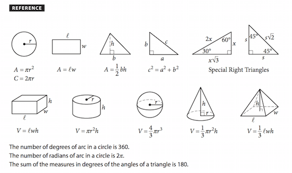

<!DOCTYPE html>
<html lang="en">
<head>
<meta charset="UTF-8">
<meta name="viewport" content="width=device-width, initial-scale=1.0">
<meta name="robots" content="noindex, nofollow, noarchive">
<title>SAT Math Practice Exam</title>
<style>
*,*::before,*::after{box-sizing:border-box;margin:0;padding:0}
:root{
  --primary:#1b3a6b;--accent:#0d6efd;--success:#198754;--danger:#dc3545;
  --warning:#d97706;--bg:#f0f2f5;--card:#fff;--text:#212529;
  --muted:#6c757d;--border:#dee2e6;--header-h:60px;--footer-h:60px;
}
body{font-family:'Segoe UI',system-ui,sans-serif;background:var(--bg);color:var(--text);min-height:100vh}

/* START SCREEN */
.start-screen{display:flex;flex-direction:column;align-items:center;justify-content:center;min-height:100vh;padding:2rem}
.start-card{background:var(--card);border-radius:12px;padding:3rem 3.5rem;max-width:620px;width:100%;box-shadow:0 4px 24px rgba(0,0,0,.09);text-align:center}
.start-logo{font-size:.75rem;font-weight:700;text-transform:uppercase;letter-spacing:2.5px;color:var(--muted);margin-bottom:1.5rem}
.start-card h1{font-size:1.9rem;font-weight:800;color:var(--primary);margin-bottom:.4rem}
.start-subtitle{font-size:1rem;color:var(--muted);margin-bottom:2rem}
.info-grid{display:grid;grid-template-columns:1fr 1fr;gap:.75rem;margin-bottom:2rem;text-align:left}
.info-item{background:#f8f9fa;border-radius:8px;padding:.875rem 1rem}
.info-item .i-label{font-size:.7rem;font-weight:700;text-transform:uppercase;letter-spacing:1px;color:var(--muted);margin-bottom:.2rem}
.info-item .i-val{font-size:.95rem;font-weight:600}
.directions{background:#eff6ff;border:1px solid #bfdbfe;border-radius:8px;padding:1rem 1.25rem;margin-bottom:1.75rem;text-align:left;font-size:.875rem;color:#1e40af;line-height:1.6}
.directions strong{display:block;margin-bottom:.35rem;font-size:.8rem;text-transform:uppercase;letter-spacing:1px}
.btn-primary{background:var(--accent);color:#fff;border:none;border-radius:8px;padding:.875rem 2.75rem;font-size:1rem;font-weight:700;cursor:pointer;transition:background .15s,transform .1s}
.btn-primary:hover{background:#0b5ed7}
.btn-primary:active{transform:scale(.98)}

/* EXAM LAYOUT */
.exam-layout{display:flex;flex-direction:column;height:100vh;overflow:hidden}
.exam-header{background:var(--primary);color:#fff;height:var(--header-h);display:flex;align-items:center;padding:0 1.25rem;gap:1rem;flex-shrink:0;z-index:100}
.hdr-left{flex:1;display:flex;flex-direction:column;gap:1px}
.hdr-center{display:flex;align-items:center;gap:.5rem}
.hdr-right{flex:1;display:flex;justify-content:flex-end;gap:.5rem}
.hdr-module-label{font-size:.65rem;font-weight:700;text-transform:uppercase;letter-spacing:1.5px;opacity:.65}
.hdr-module-title{font-size:.95rem;font-weight:700}
.timer-box{background:rgba(255,255,255,.15);border-radius:6px;padding:.35rem .875rem;font-size:1.2rem;font-weight:700;font-variant-numeric:tabular-nums;min-width:80px;text-align:center;letter-spacing:1px}
.timer-box.warn{background:rgba(220,53,69,.75)}
.hide-timer-btn{background:none;border:none;color:rgba(255,255,255,.7);font-size:.75rem;cursor:pointer;padding:.2rem .4rem;border-radius:4px}
.hide-timer-btn:hover{color:#fff}
.hdr-btn{background:rgba(255,255,255,.12);color:#fff;border:1px solid rgba(255,255,255,.25);border-radius:6px;padding:.35rem .875rem;font-size:.8rem;font-weight:600;cursor:pointer;transition:background .15s;white-space:nowrap}
.hdr-btn:hover{background:rgba(255,255,255,.22)}
.hdr-btn.calc-active{background:rgba(255,255,255,.3)}

/* QUESTION AREA */
.question-area{flex:1;overflow-y:auto;display:flex;justify-content:center;padding:1.75rem 1.25rem}
.question-wrapper{width:100%;max-width:760px}
.q-header{display:flex;align-items:center;gap:.75rem;margin-bottom:1.25rem}
.q-num-badge{background:var(--primary);color:#fff;border-radius:6px;padding:.25rem .7rem;font-size:.8rem;font-weight:700}
.q-topic-badge{background:#e8f0fe;color:#1a56db;border-radius:4px;padding:.2rem .5rem;font-size:.72rem;font-weight:700;text-transform:uppercase;letter-spacing:.5px}
.flag-toggle{margin-left:auto;display:flex;align-items:center;gap:.4rem;background:none;border:1px solid var(--border);border-radius:6px;padding:.3rem .7rem;font-size:.8rem;cursor:pointer;color:var(--muted);transition:all .15s}
.flag-toggle:hover{border-color:var(--warning);color:var(--warning)}
.flag-toggle.flagged{border-color:var(--warning);color:var(--warning);background:#fff7ed}
.flag-icon{font-size:.9rem}
.question-card{background:var(--card);border-radius:10px;padding:1.75rem;box-shadow:0 2px 10px rgba(0,0,0,.06)}
.question-text{font-size:1.03rem;line-height:1.75;margin-bottom:1.5rem;color:var(--text)}
.question-text sub,.question-text sup{font-size:.75em}
.q-figure{margin:.85rem 0 1.1rem;display:flex;justify-content:center}
.q-figure svg{max-width:100%;height:auto}
.q-table{border-collapse:collapse;margin:.85rem auto 1.1rem;font-size:.92rem;background:#fff}
.q-table th,.q-table td{border:1px solid #adb5bd;padding:.45rem .75rem;text-align:center}
.q-table th{background:#f1f3f5;font-weight:700}
.calc-note{font-size:.78rem;color:var(--muted);font-style:italic;margin-bottom:1rem;padding:.5rem .75rem;background:#f8f9fa;border-radius:4px;display:inline-block}

/* MC OPTIONS */
.options-list{display:flex;flex-direction:column;gap:.55rem}
.opt-btn{display:flex;align-items:center;gap:.875rem;padding:.8rem 1.1rem;border:2px solid var(--border);border-radius:8px;background:#fff;cursor:pointer;text-align:left;font-size:.97rem;color:var(--text);width:100%;transition:border-color .15s,background .15s;line-height:1.4}
.opt-btn:hover:not(.selected):not(.correct):not(.incorrect){border-color:#93c5fd;background:#f0f7ff}
.opt-btn.selected{border-color:var(--accent);background:#dbeafe}
.opt-btn.correct{border-color:var(--success);background:#d1fae5;pointer-events:none}
.opt-btn.incorrect{border-color:var(--danger);background:#fee2e2;pointer-events:none}
.opt-letter{width:30px;height:30px;border-radius:50%;border:2px solid var(--border);display:flex;align-items:center;justify-content:center;font-weight:700;font-size:.8rem;flex-shrink:0;transition:all .15s}
.opt-btn.selected .opt-letter{background:var(--accent);border-color:var(--accent);color:#fff}
.opt-btn.correct .opt-letter{background:var(--success);border-color:var(--success);color:#fff}
.opt-btn.incorrect .opt-letter{background:var(--danger);border-color:var(--danger);color:#fff}

/* SPR */
.spr-wrap{display:flex;flex-direction:column;gap:.75rem}
.spr-label{font-size:.85rem;font-weight:600;color:var(--muted)}
.spr-input{border:2px solid var(--border);border-radius:8px;padding:.8rem 1rem;font-size:1.1rem;max-width:200px;outline:none;transition:border-color .15s}
.spr-input:focus{border-color:var(--accent)}
.spr-input.correct{border-color:var(--success);background:#d1fae5}
.spr-input.incorrect{border-color:var(--danger);background:#fee2e2}
.spr-hint{font-size:.78rem;color:var(--muted)}

/* EXAM FOOTER */
.exam-footer{background:var(--card);border-top:1px solid var(--border);height:var(--footer-h);display:flex;align-items:center;padding:0 1.25rem;flex-shrink:0}
.ftr-left{flex:1}
.ftr-right{flex:1;display:flex;justify-content:flex-end}
.ftr-center{flex:0}
.btn-back,.btn-next,.btn-submit{border-radius:6px;font-size:.88rem;font-weight:700;cursor:pointer;padding:.5rem 1.25rem;transition:all .15s}
.btn-back{background:#fff;border:1px solid var(--border);color:var(--text)}
.btn-back:hover{border-color:var(--accent);color:var(--accent)}
.btn-next{background:var(--accent);color:#fff;border:none}
.btn-next:hover{background:#0b5ed7}
.btn-submit{background:var(--success);color:#fff;border:none}
.btn-submit:hover{background:#146c43}

/* NAVIGATOR OVERLAY */
.nav-overlay{position:fixed;inset:0;background:rgba(0,0,0,.45);z-index:200;display:flex;align-items:flex-end;justify-content:center}
.nav-panel{background:var(--card);border-radius:16px 16px 0 0;padding:1.5rem;width:100%;max-width:760px;max-height:65vh;overflow-y:auto}
.nav-panel-hdr{display:flex;justify-content:space-between;align-items:center;margin-bottom:1rem}
.nav-panel-title{font-size:1rem;font-weight:700}
.close-x{background:none;border:none;font-size:1.4rem;cursor:pointer;color:var(--muted);line-height:1;padding:.2rem .4rem;border-radius:4px}
.close-x:hover{background:#f0f2f5}
.nav-legend{display:flex;gap:1rem;margin-bottom:1rem;flex-wrap:wrap}
.leg-item{display:flex;align-items:center;gap:.4rem;font-size:.75rem;color:var(--muted)}
.leg-dot{width:12px;height:12px;border-radius:3px}
.q-grid{display:grid;grid-template-columns:repeat(auto-fill,minmax(46px,1fr));gap:.5rem}
.q-dot{width:46px;height:46px;border-radius:8px;display:flex;align-items:center;justify-content:center;font-size:.85rem;font-weight:700;cursor:pointer;border:2px solid var(--border);background:#fff;color:var(--text);transition:all .15s}
.q-dot:hover{border-color:var(--accent)}
.q-dot.q-current{border-color:var(--accent);background:var(--accent);color:#fff}
.q-dot.q-answered{background:#e8f0fe;border-color:#93c5fd}
.q-dot.q-flagged{border-color:var(--warning);background:#fff7ed;color:var(--warning)}
.q-dot.q-answered.q-flagged{background:#fff7ed;border-color:var(--warning)}

/* CALCULATOR */
.calc-panel{position:fixed;top:calc(var(--header-h) + 8px);right:1rem;width:min(960px,calc(100vw - 2rem));height:min(700px,calc(100vh - var(--header-h) - var(--footer-h) - 18px));min-width:520px;min-height:420px;background:#fff;border:1px solid #1f1f1f;border-radius:8px;box-shadow:0 12px 36px rgba(0,0,0,.24);z-index:150;overflow:hidden;display:flex;flex-direction:column}
.calc-panel.dragging,.calc-panel.resizing{box-shadow:0 16px 44px rgba(0,0,0,.3)}
.calc-hdr{height:52px;background:#2b2b2b;color:#fff;display:grid;grid-template-columns:1fr auto 1fr;align-items:center;padding:0 .85rem;font-size:.9rem;cursor:move;user-select:none;touch-action:none}
.calc-brand{display:flex;align-items:center;gap:.75rem;min-width:0}
.calc-folder{font-size:1.35rem;color:#e8e8e8}
.calc-title{font-size:1.02rem;white-space:nowrap}
.calc-save{background:#2f7de1;color:#fff;border:none;border-radius:4px;padding:.52rem 1.05rem;font-size:.95rem;font-weight:700}
.calc-logo{font-size:2.05rem;line-height:1;font-weight:800;letter-spacing:-1px;text-shadow:0 2px 2px rgba(0,0,0,.55)}
.calc-actions{display:flex;align-items:center;justify-content:flex-end;gap:.55rem}
.calc-action{border:1px solid rgba(255,255,255,.55);border-radius:4px;background:transparent;color:#fff;padding:.45rem .78rem;font-weight:700;font-size:.9rem}
.calc-action.blue{background:#2f7de1;border-color:#2f7de1}
.calc-hdr button{cursor:pointer}
.calc-mini{font-size:1.25rem;opacity:.9}
.calc-close{background:none;border:none;color:#ddd;font-size:1.35rem;cursor:pointer;width:30px;height:30px;border-radius:5px}
.calc-close:hover{background:rgba(255,255,255,.12);color:#fff}
.calc-resize-handle{position:absolute;right:0;bottom:0;width:22px;height:22px;cursor:nwse-resize;z-index:4;touch-action:none}
.calc-resize-handle::after{content:'';position:absolute;right:5px;bottom:5px;width:10px;height:10px;border-right:2px solid #777;border-bottom:2px solid #777}
.calc-resize-handle:hover::after{border-color:#2f7de1}
.graph-calc{flex:1;min-height:0;display:grid;grid-template-columns:380px 1fr;grid-template-rows:1fr 242px;background:#fff}
.graph-side{grid-row:1;border-right:1px solid #c7c7c7;display:flex;flex-direction:column;min-height:0;background:#fff}
.graph-side-top{height:60px;border-bottom:1px solid #dedede;display:flex;align-items:center;gap:1.8rem;padding:0 1.05rem;background:#fafafa;box-shadow:0 6px 18px rgba(0,0,0,.08)}
.graph-panel-tools{margin-left:auto;display:flex;align-items:center;gap:.45rem}
.graph-icon-btn{width:34px;height:34px;border:1px solid transparent;border-radius:4px;background:transparent;color:#5c5c5c;font-size:1.7rem;font-weight:700;cursor:pointer;line-height:1}
.graph-icon-btn.small{font-size:1.2rem}
.graph-icon-btn:hover{background:#eee;border-color:#ddd}
.graph-expressions{flex:1;min-height:0;overflow-y:auto;background:#fff}
.graph-row{display:grid;grid-template-columns:38px 1fr 68px;align-items:start;min-height:66px;border-bottom:1px solid #e3e3e3;background:#fff}
.graph-row:focus-within{box-shadow:inset 0 0 0 1px #2f7de1}
.graph-row.row-options-open{background:#f7fbff;box-shadow:inset 3px 0 0 #2f7de1}
.graph-index{align-self:stretch;background:#f1f1f1;color:#5f6b7a;font-size:.75rem;padding:.28rem .2rem;text-align:left;font-variant-numeric:tabular-nums}
.graph-entry{display:grid;grid-template-columns:18px 1fr;gap:.55rem;align-items:center;padding:.75rem .6rem}
.graph-swatch{width:13px;height:13px;border-radius:50%;box-shadow:0 0 0 2px rgba(0,0,0,.08)}
.graph-input{width:100%;border:none;border-radius:0;padding:.25rem .2rem;font-size:1.05rem;background:transparent;outline:none;color:#111;font-family:'Segoe UI',system-ui,sans-serif}
.graph-row-tools{display:flex;align-items:center;justify-content:flex-end;gap:.1rem;padding:.55rem .3rem 0 0}
.graph-row-btn{height:28px;width:28px;border:1px solid transparent;border-radius:5px;background:transparent;color:#a9a9a9;cursor:pointer;font-size:1.2rem;line-height:1}
.graph-row-btn:hover{border-color:#ddd;color:#555;background:#f7f7f7}
.graph-remove{font-size:1.7rem;line-height:.8}
.graph-error{padding:.45rem .75rem;color:#b42318;font-size:.75rem;min-height:1.6rem;border-top:1px solid #edf0f4;background:#fff}
.graph-main{position:relative;min-width:0;min-height:0;background:#fff;overflow:hidden}
.graph-canvas{width:100%;height:100%;display:block;cursor:grab;touch-action:none}
.graph-canvas.dragging{cursor:grabbing}
.graph-zoom{position:absolute;right:.55rem;top:.55rem;display:flex;flex-direction:column}
.graph-btn{border:1px solid #d1d1d1;background:#f7f7f7;padding:.42rem .5rem;font-size:.78rem;font-weight:700;cursor:pointer;color:#4b5563}
.graph-btn:hover{background:#eee}
.graph-zoom .graph-btn{width:36px;height:36px;padding:0;font-size:1.18rem;border-radius:6px 6px 0 0;background:rgba(246,246,246,.95);box-shadow:0 1px 4px rgba(0,0,0,.18)}
.graph-zoom .graph-btn + .graph-btn{border-radius:0;border-top:none}
.graph-zoom .graph-btn:last-child{border-radius:0 0 6px 6px}
.graph-settings-panel{position:absolute;right:3.3rem;top:.6rem;width:350px;background:#fff;border:1px solid #c7c7c7;border-radius:6px;box-shadow:0 4px 18px rgba(0,0,0,.22);padding:.8rem;z-index:2;font-size:.9rem}
.graph-settings-panel.hidden{display:none}
.settings-segment{display:grid;grid-template-columns:1fr 1fr;border:1px solid #c9c9c9;border-radius:4px;overflow:hidden;margin-bottom:.7rem}
.settings-segment button{border:none;background:#fff;padding:.55rem;font-weight:700;cursor:pointer}
.settings-segment button.active{background:#5d5d5d;color:#fff}
.settings-row{display:flex;align-items:center;justify-content:space-between;border-top:1px solid #ececec;padding:.45rem 0;gap:.7rem}
.settings-row:first-of-type{border-top:none}
.settings-row label{display:flex;align-items:center;gap:.45rem}
.settings-input{width:112px;border:1px solid #c9c9c9;border-radius:5px;padding:.35rem}
.graph-keypad{grid-column:1 / span 2;grid-row:2;border-top:1px solid #d8d8d8;background:#ededed;padding:.35rem .75rem;display:flex;flex-direction:column;gap:.35rem}
.keypad-tabs{display:flex;gap:.35rem}
.keypad-tab{border:1px solid #c8c8c8;background:#f8f8f8;border-radius:5px;padding:.35rem .8rem;font-weight:700;text-transform:uppercase;font-size:.72rem;cursor:pointer}
.keypad-tab.active{background:#5f6368;color:#fff;border-color:#5f6368}
.keypad-grid{flex:1;display:grid;grid-template-columns:repeat(10,1fr);grid-template-rows:repeat(4,1fr);gap:.35rem}
.graph-key{border:1px solid #d4d4d4;border-radius:4px;background:linear-gradient(#fff,#f6f6f6);min-height:38px;padding:.25rem;font-size:1rem;font-weight:500;color:#111;cursor:pointer;box-shadow:inset 0 -1px 0 rgba(0,0,0,.04)}
.graph-key.num{background:linear-gradient(#d8d8d8,#c5c5c5)}
.graph-key.blue{background:#2f7de1;color:#fff;border-color:#2f7de1}
.graph-key.wide{grid-column:span 2}
.graph-key:hover{filter:brightness(.97)}
.graph-help{display:none}
.graph-login{margin:1rem 2rem;border:1px solid #d2d2d2;border-radius:5px;padding:.8rem;color:#555;font-size:.9rem}
.graph-login a{color:#2f7de1}
.graph-powered{color:#c7c7c7;text-align:center;font-size:.8rem;margin-top:.2rem}

/* REFERENCE SHEET */
.ref-overlay{position:fixed;inset:0;background:rgba(0,0,0,.42);z-index:210;display:flex;align-items:center;justify-content:center;padding:1rem}
.ref-panel{background:#fff;border-radius:10px;box-shadow:0 16px 44px rgba(0,0,0,.24);width:min(900px,100%);max-height:min(760px,calc(100vh - 2rem));display:flex;flex-direction:column;overflow:hidden}
.ref-hdr{background:var(--primary);color:#fff;padding:.8rem 1rem;display:flex;align-items:center;justify-content:space-between;font-weight:800}
.ref-hdr .calc-close{color:rgba(255,255,255,.75)}
.ref-hdr .calc-close:hover{background:rgba(255,255,255,.16);color:#fff}
.ref-body{padding:1rem;overflow:auto;background:#f8f9fa}
.ref-img{display:block;width:100%;height:auto;background:#fff;border:1px solid var(--border);border-radius:6px}

/* MODULE END */
.mod-end-screen{display:flex;flex-direction:column;align-items:center;justify-content:center;min-height:100vh;padding:2rem}
.mod-end-card{background:var(--card);border-radius:12px;padding:2.5rem 3rem;max-width:520px;width:100%;text-align:center;box-shadow:0 4px 20px rgba(0,0,0,.08)}
.score-ring{width:110px;height:110px;border-radius:50%;background:var(--primary);color:#fff;display:flex;flex-direction:column;align-items:center;justify-content:center;margin:0 auto 1.5rem}
.ring-num{font-size:2.2rem;font-weight:800;line-height:1}
.ring-of{font-size:.75rem;opacity:.7}
.mod-end-card h2{font-size:1.5rem;font-weight:800;margin-bottom:.5rem}
.mod-end-card p{color:var(--muted);line-height:1.6;margin-bottom:1.75rem;font-size:.95rem}
.path-badge{display:inline-block;padding:.35rem .875rem;border-radius:20px;font-size:.8rem;font-weight:700;margin-bottom:1.5rem}
.path-badge.hard{background:#fee2e2;color:#991b1b}
.path-badge.easy{background:#d1fae5;color:#065f46}

/* RESULTS */
.results-screen{max-width:880px;margin:0 auto;padding:2rem 1.25rem 4rem}
.results-hdr{text-align:center;margin-bottom:2rem}
.results-hdr h1{font-size:1.85rem;font-weight:800;color:var(--primary);margin-bottom:.35rem}
.results-hdr p{color:var(--muted);font-size:.95rem}
.score-display{display:flex;gap:1rem;justify-content:center;margin-bottom:2rem;flex-wrap:wrap}
.score-card{background:var(--card);border-radius:12px;padding:1.5rem 2rem;text-align:center;box-shadow:0 2px 10px rgba(0,0,0,.06);min-width:155px}
.score-card.main{border-top:4px solid var(--primary)}
.sc-label{font-size:.72rem;font-weight:700;text-transform:uppercase;letter-spacing:1px;color:var(--muted);margin-bottom:.4rem}
.sc-val{font-size:2.4rem;font-weight:800;color:var(--primary);line-height:1}
.sc-sub{font-size:.78rem;color:var(--muted);margin-top:.25rem}
.score-caveat{max-width:720px;margin:-1rem auto 2rem;color:var(--muted);font-size:.86rem;line-height:1.5;text-align:center}
.estimate-toggle{display:block;margin:-.75rem auto 1.25rem;background:#fff;border:1px solid var(--border);border-radius:6px;padding:.45rem .85rem;font-size:.82rem;font-weight:700;color:var(--primary);cursor:pointer}
.estimate-toggle:hover{border-color:var(--accent);color:var(--accent)}
.score-card.estimate-hidden{display:none}
.section-card{background:var(--card);border-radius:12px;padding:1.5rem;margin-bottom:1.25rem;box-shadow:0 2px 10px rgba(0,0,0,.06)}
.section-card h2{font-size:1rem;font-weight:700;margin-bottom:1.1rem;padding-bottom:.75rem;border-bottom:1px solid var(--border)}
/* Topic bars */
.topic-row{margin-bottom:1rem}
.topic-row-hdr{display:flex;justify-content:space-between;font-size:.85rem;margin-bottom:.3rem}
.topic-bar-track{height:8px;background:#e9ecef;border-radius:4px;overflow:hidden}
.topic-bar-fill{height:100%;border-radius:4px;background:var(--accent)}
/* Answer review */
.review-item{display:flex;gap:.875rem;padding:1.1rem 0;border-bottom:1px solid var(--border)}
.review-item:last-child{border-bottom:none}
.rev-icon{width:26px;height:26px;border-radius:50%;display:flex;align-items:center;justify-content:center;font-size:.8rem;font-weight:700;flex-shrink:0;margin-top:.1rem}
.rev-icon.c{background:var(--success);color:#fff}
.rev-icon.w{background:var(--danger);color:#fff}
.rev-icon.u{background:var(--muted);color:#fff}
.rev-body{flex:1}
.rev-qnum{font-size:.7rem;font-weight:700;text-transform:uppercase;letter-spacing:.5px;color:var(--muted);margin-bottom:.2rem}
.rev-qtext{font-size:.9rem;margin-bottom:.4rem;line-height:1.5}
.rev-ans{font-size:.82rem;color:var(--muted);margin-bottom:.4rem}
.rev-exp{font-size:.82rem;background:#f8f9fa;border-left:3px solid var(--accent);padding:.5rem .75rem;border-radius:0 5px 5px 0;line-height:1.5}
/* Suggestions */
.sug-item{display:flex;gap:.875rem;padding:.875rem 0;border-bottom:1px solid var(--border)}
.sug-item:last-child{border-bottom:none}
.sug-icon{font-size:1.25rem;flex-shrink:0;margin-top:.1rem}
.sug-text h4{font-size:.88rem;font-weight:700;margin-bottom:.2rem}
.sug-text p{font-size:.8rem;color:var(--muted);line-height:1.4}
.btn-restart{background:var(--primary);color:#fff;border:none;border-radius:8px;padding:.75rem 2rem;font-size:.95rem;font-weight:700;cursor:pointer;margin-top:1.5rem;display:block;margin-left:auto;margin-right:auto}
.btn-restart:hover{background:#152e57}

/* Responsive */
@media(max-width:560px){
  .start-card{padding:2rem 1.25rem}
  .info-grid{grid-template-columns:1fr}
  .calc-panel{left:.5rem;right:.5rem;width:auto;min-width:0;min-height:360px}
  .calc-hdr{grid-template-columns:1fr auto;height:44px}
  .calc-logo,.calc-actions .calc-action,.calc-mini{display:none}
  .graph-calc{grid-template-columns:1fr;grid-template-rows:190px 1fr}
  .graph-side{grid-row:auto;border-right:none;border-bottom:1px solid var(--border)}
  .graph-side-top{height:34px}
  .graph-row{min-height:42px}
  .graph-keypad{display:none}
  .graph-help{display:none}
  .score-card{min-width:130px;padding:1.25rem 1.25rem}
}
</style>
</head>
<body>
<div id="app"></div>
<script>
// =====================================================================
// QUESTION BANKS
// =====================================================================

const Q_M1 = [
  // ── EASY ──
  {id:'m1_1',diff:'easy',topic:'Algebra',type:'mc',calc:true,
   q:`A ride-share company charges a fixed booking fee plus a constant charge for each mile. The table shows the total charges for two trips.
   <table class="q-table"><tr><th>Trip distance, miles</th><td>6</td><td>14</td></tr><tr><th>Total charge</th><td>$18.40</td><td>$31.20</td></tr></table>
   What is the charge, in dollars, for each additional mile?`,
   opts:['$1.20','$1.60','$2.30','$3.20'],ans:'B',
   exp:'The charge increases by $31.20 - $18.40 = $12.80 over 14 - 6 = 8 miles. The unit rate is 12.80/8 = $1.60 per mile.'},
  {id:'m1_2',diff:'easy',topic:'Algebra',type:'mc',calc:false,
   q:'A club orders <i>n</i> shirts that cost $12 each. A coupon reduces the shirt total by 15%, and shipping costs $18. Which expression gives the total cost, in dollars?',
   opts:['10.2<i>n</i> + 18','12<i>n</i> + 15 + 18','0.15(12<i>n</i> + 18)','12<i>n</i> - 0.15<i>n</i> + 18'],ans:'A',
   exp:'After a 15% discount, the club pays 85% of the shirt cost: 0.85(12n)=10.2n. Adding shipping gives 10.2n+18.'},
  {id:'m1_3',diff:'easy',topic:'Problem Solving & Data Analysis',type:'mc',calc:true,
   q:`The table gives two values from a linear model <i>y</i> = <i>mx</i> + <i>b</i>.
   <table class="q-table"><tr><th><i>x</i></th><td>2</td><td>6</td></tr><tr><th><i>y</i></th><td>11</td><td>23</td></tr></table>
   What is the value of <i>b</i>?`,
   opts:['3','5','7','17'],ans:'B',
   exp:'The slope is (23-11)/(6-2)=3. Using (2,11), 11=3(2)+b, so b=5.'},
  {id:'m1_4',diff:'easy',topic:'Geometry & Trigonometry',type:'mc',calc:false,
   q:`A 13-foot ladder leans against a wall. The foot of the ladder is 5 feet from the wall. If the foot of the same ladder is moved to 8 feet from the wall, what is the new height, in feet, reached by the top of the ladder?
   <div class="q-figure"><svg width="280" height="170" viewBox="0 0 280 170" role="img" aria-label="Right triangle ladder diagram with hypotenuse 13 and horizontal distance 8">
     <line x1="55" y1="140" x2="235" y2="140" stroke="#222" stroke-width="2"/>
     <line x1="55" y1="140" x2="55" y2="25" stroke="#222" stroke-width="2"/>
     <line x1="55" y1="42" x2="175" y2="140" stroke="#0d6efd" stroke-width="4"/>
     <path d="M55 140 L75 140 L75 120 L55 120 Z" fill="none" stroke="#222" stroke-width="1.5"/>
     <text x="103" y="155" font-size="17">8</text><text x="123" y="83" fill="#0d6efd" font-size="17">13</text><text x="24" y="96" font-size="17">h</text>
   </svg></div>`,
   opts:['5','√89','√105','21'],ans:'C',
   exp:'The ladder is the hypotenuse. With horizontal distance 8, h^2+8^2=13^2, so h^2=105 and h=√105.'},
  {id:'m1_5',diff:'easy',topic:'Algebra',type:'spr',calc:false,
   q:'If 5(<i>a</i> + 2) = 3<i>a</i> + 34, what is the value of <i>a</i>/2?',
   ans:'6',
   exp:'5a+10=3a+34, so 2a=24 and a=12. Therefore a/2=6.'},
  {id:'m1_6',diff:'easy',topic:'Problem Solving & Data Analysis',type:'mc',calc:true,
   q:`The table summarizes a survey of juniors and seniors.
   <table class="q-table"><tr><th></th><th>Plays an instrument</th><th>Does not play an instrument</th></tr><tr><th>Junior</th><td>18</td><td>42</td></tr><tr><th>Senior</th><td>30</td><td>30</td></tr></table>
   Of the students in the survey who play an instrument, what percent are seniors?`,
   opts:['40%','50%','62.5%','75%'],ans:'C',
   exp:'There are 18+30=48 students who play an instrument. Of these, 30 are seniors, and 30/48=0.625=62.5%.'},
  {id:'m1_7',diff:'easy',topic:'Algebra',type:'mc',calc:false,
   q:'A tutoring service charges a $35 enrollment fee plus $12 per session. Priya can spend at most $125. Which inequality represents the number of sessions, <i>s</i>, Priya can attend?',
   opts:['12<i>s</i> + 35 &ge; 125','35<i>s</i> + 12 &le; 125','12<i>s</i> + 35 &le; 125','35<i>s</i> - 12 &le; 125'],ans:'C',
   exp:'The total cost is the fixed fee plus 12 dollars per session: 35+12s. "At most $125" means 12s+35 <= 125.'},
  {id:'m1_8',diff:'easy',topic:'Geometry & Trigonometry',type:'mc',calc:false,
   q:'Two parallel lines are cut by a transversal. One pair of alternate interior angles has measures (3<i>x</i> + 10)&deg; and (5<i>x</i> - 30)&deg;. What is the value of <i>x</i>?',
   opts:['10','20','40','70'],ans:'B',
   exp:'Alternate interior angles are congruent, so 3x+10=5x-30. Then 40=2x, so x=20.'},
  // ── MEDIUM ──
  {id:'m1_9',diff:'medium',topic:'Advanced Math',type:'mc',calc:false,
   q:'Which of the following is equivalent to <sup><i>x</i>² − 9</sup>/<sub><i>x</i> − 3</sub> for <i>x</i> ≠ 3?',
   opts:['<i>x</i> − 3','<i>x</i> + 3','<i>x</i>² + 3','<i>x</i> − 9'],ans:'B',
   exp:'Factor the numerator: (x + 3)(x − 3) ÷ (x − 3) = x + 3.'},
  {id:'m1_10',diff:'medium',topic:'Advanced Math',type:'mc',calc:false,
   q:'If <i>f</i>(<i>x</i>) = 2<i>x</i>² − 3<i>x</i> + 1, what is <i>f</i>(−2)?',
   opts:['15','11','9','−7'],ans:'A',
   exp:'f(−2) = 2(−2)² − 3(−2) + 1 = 2(4) + 6 + 1 = 8 + 6 + 1 = 15.'},
  {id:'m1_11',diff:'medium',topic:'Problem Solving & Data Analysis',type:'mc',calc:false,
   q:`The histogram summarizes the number of books read by 24 students during one month.
   <table class="q-table"><tr><th>Books read</th><td>0</td><td>1</td><td>2</td><td>3</td><td>4</td></tr><tr><th>Number of students</th><td>3</td><td>5</td><td>7</td><td>6</td><td>3</td></tr></table>
   What is the median number of books read?`,
   opts:['1','2','2.5','3'],ans:'B',
   exp:'There are 24 students, so the median is the average of the 12th and 13th values in order. The 9th through 15th values are all 2, so the median is 2.'},
  {id:'m1_12',diff:'medium',topic:'Geometry & Trigonometry',type:'mc',calc:false,
   q:`In the right triangle shown, what is the value of <i>c</i>?
   <div class="q-figure"><svg width="260" height="160" viewBox="0 0 260 160" role="img" aria-label="Right triangle with legs 7 and 24 and hypotenuse c">
     <path d="M45 125 L215 125 L45 55 Z" fill="#fffdf7" stroke="#222" stroke-width="2"/>
     <path d="M45 125 L65 125 L65 105 L45 105 Z" fill="none" stroke="#222" stroke-width="1.5"/>
     <text x="124" y="148" font-size="18">24</text><text x="22" y="94" font-size="18">7</text><text x="128" y="83" font-size="18">c</text>
   </svg></div>`,
   opts:['25','26','27','31'],ans:'A',
   exp:'√(7² + 24²) = √(49 + 576) = √625 = 25.'},
  {id:'m1_13',diff:'medium',topic:'Algebra',type:'mc',calc:true,
   q:`A water tank drains at a constant rate. The table shows the amount of water in the tank at two times.
   <table class="q-table"><tr><th>Time, minutes</th><td>4</td><td>9</td></tr><tr><th>Water, gallons</th><td>74</td><td>49</td></tr></table>
   If <i>W</i> is the amount of water, in gallons, after <i>t</i> minutes, which equation represents this relationship?`,
   opts:['<i>W</i> = -5<i>t</i> + 94','<i>W</i> = -5<i>t</i> + 54','<i>W</i> = 5<i>t</i> + 54','<i>W</i> = -25<i>t</i> + 174'],ans:'A',
   exp:'The rate is (49-74)/(9-4)=-25/5=-5 gallons per minute. Using (4,74), 74=-5(4)+b, so b=94.'},
  {id:'m1_14',diff:'medium',topic:'Advanced Math',type:'spr',calc:false,
   q:'If <i>x</i>² − 5<i>x</i> + 6 = 0, what is the sum of all values of <i>x</i> that satisfy the equation?',
   ans:'5',
   exp:'Factor: (x − 2)(x − 3) = 0, so x = 2 or x = 3. Sum = 2 + 3 = 5. (Also: by Vieta\'s, sum of roots = −(−5)/1 = 5.)'},
  {id:'m1_15',diff:'medium',topic:'Problem Solving & Data Analysis',type:'mc',calc:true,
   q:`The scatterplot has a line of best fit that passes through (0, 3) and (5, 13). Which equation best represents this line?
   <div class="q-figure"><svg width="310" height="220" viewBox="0 0 310 220" role="img" aria-label="Scatterplot with line through points 0,3 and 5,13">
     <line x1="45" y1="180" x2="280" y2="180" stroke="#222"/><line x1="45" y1="180" x2="45" y2="25" stroke="#222"/>
     <g stroke="#dee2e6">${[80,115,150,185,220,255].map(x=>`<line x1="${x}" y1="25" x2="${x}" y2="180"/>`).join('')}${[45,70,95,120,145].map(y=>`<line x1="45" y1="${y}" x2="280" y2="${y}"/>`).join('')}</g>
     <line x1="45" y1="145" x2="220" y2="45" stroke="#0d6efd" stroke-width="3"/>
     <circle cx="45" cy="145" r="4" fill="#111"/><circle cx="220" cy="45" r="4" fill="#111"/><circle cx="80" cy="126" r="3" fill="#555"/><circle cx="115" cy="101" r="3" fill="#555"/><circle cx="185" cy="66" r="3" fill="#555"/>
     <text x="37" y="199" font-size="12">0</text><text x="213" y="199" font-size="12">5</text><text x="18" y="149" font-size="12">3</text><text x="12" y="49" font-size="12">13</text>
   </svg></div>`,
   opts:['<i>y</i> = 2<i>x</i> + 3','<i>y</i> = 3<i>x</i> + 2','<i>y</i> = 2<i>x</i> − 3','<i>y</i> = <i>x</i> + 3'],ans:'A',
   exp:'Slope = (13 − 3) ÷ (5 − 0) = 2. y-intercept = 3 (given). Equation: y = 2x + 3.'},
  {id:'m1_16',diff:'medium',topic:'Geometry & Trigonometry',type:'mc',calc:true,
   q:`The circle shown has circumference 16π. What is the area of the circle?
   <div class="q-figure"><svg width="260" height="180" viewBox="0 0 260 180" role="img" aria-label="Circle labeled with circumference 16 pi">
     <circle cx="130" cy="78" r="54" fill="#f8fbff" stroke="#222" stroke-width="2.5"/>
     <path d="M130 24
              A54 54 0 0 1 184 78
              A54 54 0 0 1 130 132
              A54 54 0 0 1 76 78
              A54 54 0 0 1 130 24"
           fill="none" stroke="#0d6efd" stroke-width="4" stroke-linecap="round"/>
     <line x1="78" y1="146" x2="182" y2="146" stroke="#0d6efd" stroke-width="2"/>
     <text x="58" y="168" font-size="17">Circumference = 16π</text>
   </svg></div>`,
   opts:['8π','16π','32π','64π'],ans:'D',
   exp:'Circumference = 2πr = 16π → r = 8. Area = π(8²) = 64π.'},
  // ── HARD ──
  {id:'m1_17',diff:'hard',topic:'Advanced Math',type:'mc',calc:false,
   q:'The function <i>f</i> is defined by <i>f</i>(<i>x</i>) = <i>a</i> · 2<sup><i>x</i></sup>. The graph of <i>y</i> = <i>f</i>(<i>x</i>) passes through (3, 40). What is the <i>y</i>-intercept of the graph?',
   opts:['(0, 3)','(0, 5)','(0, 8)','(0, 10)'],ans:'B',
   exp:'Since f(3)=a·2³=8a=40, a=5. The y-intercept is f(0)=5·2⁰=5, so the point is (0,5).'},
  {id:'m1_18',diff:'hard',topic:'Algebra',type:'spr',calc:true,
   q:'A store sells apples for $1.50 each and oranges for $0.90 each. Maria buys 20 pieces of fruit. If replacing 4 oranges with 4 apples increases the total cost by $2.40, how many apples did Maria buy if her final total was $24.00?',
   ans:'10',
   exp:'Each apple costs $0.60 more than each orange, so replacing 4 oranges with 4 apples increases cost by 4(0.60)=$2.40, matching the condition. Let a be apples. Then 1.50a + 0.90(20−a)=24, so 0.60a=6 and a=10.'},
  {id:'m1_19',diff:'hard',topic:'Problem Solving & Data Analysis',type:'mc',calc:true,
   q:'A random survey of 1,000 households found that 340 had at least one pet. The margin of error for the estimate is 3 percentage points. Which of the following is the best estimate of the possible range for the number of households with at least one pet in a city of 250,000 households?',
   opts:['77,500 to 92,500','82,000 to 88,000','85,000 to 88,000','250,000 to 340,000'],ans:'A',
   exp:'The estimate is 34%, with margin of error 3 percentage points, so the plausible percent range is 31% to 37%. For 250,000 households, that is 77,500 to 92,500.'},
  {id:'m1_20',diff:'hard',topic:'Advanced Math',type:'mc',calc:false,
   q:'For <i>x</i> ≠ 0, the expression <sup>2<i>x</i>³ − 5<i>x</i>² + 3<i>x</i></sup>/<sub><i>x</i></sub> is equivalent to <i>ax</i>² + <i>bx</i> + <i>c</i>. What is the value of <i>a</i> + <i>b</i> + <i>c</i>?',
   opts:['0','1','5','10'],ans:'A',
   exp:'Dividing each term by x gives 2x² − 5x + 3, so a=2, b=−5, and c=3. Therefore a+b+c=0.'},
  {id:'m1_21',diff:'hard',topic:'Geometry & Trigonometry',type:'mc',calc:true,
   q:'In a right triangle, one acute angle measures 30°. The hypotenuse has length 20. If the shorter leg is increased by 2 while the longer leg is unchanged, which expression represents the new area?',
   opts:['55√3','50√3 + 5√3','60√3','100 + 20√3'],ans:'C',
   exp:'The original shorter leg is 10 and the longer leg is 10√3. The new area is (1/2)(12)(10√3)=60√3.'},
  {id:'m1_22',diff:'hard',topic:'Advanced Math',type:'mc',calc:false,
   q:'For the system <i>y</i> = 2<i>x</i> + 5 and <i>y</i> = <i>kx</i> − 3 to have no solution, which statement must be true?',
   opts:['<i>k</i> = 2 because the lines have the same slope and different intercepts','<i>k</i> = −3 because the second line has y-intercept −3','<i>k</i> ≠ 2 because different slopes never intersect','<i>k</i> = 5 because the first line has y-intercept 5'],ans:'A',
   exp:'A system of two linear equations has no solution when the lines are parallel and distinct. The first slope is 2, so k must be 2, and the y-intercepts 5 and −3 are different.'},
];

const Q_M2_HARD = [
  {id:'m2h_1',diff:'hard',topic:'Algebra',type:'mc',calc:false,
   q:'A linear function <i>f</i> has the property that <i>f</i>(<i>x</i> + 4) − <i>f</i>(<i>x</i>) = 18 for all values of <i>x</i>. If <i>f</i>(2) = 7, what is the value of <i>f</i>(10)?',
   opts:['25','34','43','52'],ans:'C',
   exp:'For a linear function, increasing x by 4 changes the output by 18, so the slope is 18/4 = 4.5. From x=2 to x=10 is an increase of 8, or two 4-unit intervals, so f(10)=7+2(18)=43.'},
  {id:'m2h_2',diff:'hard',topic:'Advanced Math',type:'mc',calc:false,
   q:'The quadratic function <i>g</i> is defined by <i>g</i>(<i>x</i>) = <i>x</i>² − 4<i>x</i> + <i>k</i>. For all real numbers <i>x</i>, <i>g</i>(<i>x</i>) ≥ 7. What is the least possible value of <i>k</i>?',
   opts:['7','9','11','15'],ans:'C',
   exp:'Complete the square: g(x)=(x−2)²+k−4. The minimum value is k−4. To have g(x)≥7 for all x, the least possible k satisfies k−4=7, so k=11.'},
  {id:'m2h_3',diff:'hard',topic:'Problem Solving & Data Analysis',type:'mc',calc:true,
   q:`The table shows values from a linear model relating hours studied, <i>x</i>, and predicted score increase, <i>y</i>. The model is used only for 2 ≤ <i>x</i> ≤ 8. Which statement is best supported?
   <table class="q-table"><tr><th>Hours studied, x</th><td>2</td><td>5</td><td>8</td></tr><tr><th>Predicted increase, y</th><td>11</td><td>23</td><td>35</td></tr></table>`,
   opts:['Within the model range, each additional hour studied is associated with a 4-point predicted increase','A student who studies 0 hours is predicted to gain exactly 3 points','Studying 10 hours is predicted to increase a score by 43 points','Each additional point increase requires 4 more hours of studying'],ans:'A',
   exp:'The slope is (23−11)/(5−2)=4, so within the stated range the model predicts 4 additional points for each additional hour. Choices about x=0 or x=10 extrapolate outside the stated model range.'},
  {id:'m2h_4',diff:'hard',topic:'Geometry & Trigonometry',type:'mc',calc:true,
   q:`Triangle ABC is similar to triangle DEF. The table shows corresponding side lengths. What is the value of <i>x</i>?
   <table class="q-table"><tr><th>Triangle ABC</th><td>AB = 9</td><td>BC = 12</td><td>AC = <i>x</i></td></tr><tr><th>Triangle DEF</th><td>DE = 15</td><td>EF = 20</td><td>DF = 25</td></tr></table>`,
   opts:['13','15','18','21'],ans:'B',
   exp:'The scale factor from DEF to ABC is 9/15 = 12/20 = 3/5. Therefore x = (3/5)(25) = 15.'},
  {id:'m2h_5',diff:'hard',topic:'Algebra',type:'spr',calc:false,
   q:'If 2<sup><i>x</i>+1</sup> = 8<sup><i>x</i>−3</sup>, what is the value of <i>x</i>?',
   ans:'5',
   exp:'Rewrite 8 as 2³: 2^(x+1) = (2³)^(x−3) = 2^(3x−9). Therefore x+1 = 3x−9, so 10 = 2x and x = 5.'},
  {id:'m2h_6',diff:'hard',topic:'Problem Solving & Data Analysis',type:'mc',calc:true,
   q:`The table gives selected values for an exponential model <i>y</i> = <i>ab</i><sup><i>x</i></sup>. Which equation represents the model?
   <table class="q-table"><tr><th><i>x</i></th><td>0</td><td>1</td><td>2</td></tr><tr><th><i>y</i></th><td>48</td><td>36</td><td>27</td></tr></table>`,
   opts:['<i>y</i> = 48(0.75)<sup><i>x</i></sup>','<i>y</i> = 48(1.25)<sup><i>x</i></sup>','<i>y</i> = 36(0.75)<sup><i>x</i></sup>','<i>y</i> = 48 − 12<i>x</i>'],ans:'A',
   exp:'When x=0, y=a=48. The common ratio is 36/48 = 27/36 = 0.75. Thus y=48(0.75)^x.'},
  {id:'m2h_7',diff:'hard',topic:'Problem Solving & Data Analysis',type:'mc',calc:false,
   q:'A study found a correlation coefficient of <i>r</i> = 0.83 between hours of sleep and test scores. The researchers then controlled for course difficulty, and the correlation dropped to <i>r</i> = 0.18. Which conclusion is best supported?',
   opts:['Sleeping more causes higher test scores','The original association may have been partly explained by course difficulty','There is no relationship between any of the variables','A correlation of 0.18 proves the variables are independent'],ans:'B',
   exp:'The large drop after controlling for course difficulty suggests course difficulty may explain part of the original association. Correlation still does not prove causation.'},
  {id:'m2h_8',diff:'hard',topic:'Geometry & Trigonometry',type:'mc',calc:true,
   q:'A circle has center (2, −3) and radius 5. A line tangent to the circle is vertical and lies to the right of the center. Which equation represents this tangent line?',
   opts:['<i>x</i> = 7','<i>x</i> = −3','<i>y</i> = 2','<i>y</i> = 5'],ans:'A',
   exp:'A vertical tangent line to the right of the center is 5 units to the right of x=2. Thus x=2+5=7.'},
  {id:'m2h_9',diff:'hard',topic:'Advanced Math',type:'mc',calc:false,
   q:'The function <i>f</i> is defined by <i>f</i>(<i>x</i>) = <sup>2<i>x</i> − 1</sup>/<sub><i>x</i> + 3</sub>. Which statement best describes the behavior of <i>f</i> as <i>x</i> approaches −3?',
   opts:['The value of <i>f</i>(−3) is 0','The graph has a vertical asymptote at <i>x</i> = −3','The graph has a removable hole at <i>x</i> = −3','The graph crosses the x-axis at <i>x</i> = −3'],ans:'B',
   exp:'At x=−3, the denominator is 0 but the numerator is −7, not 0. The expression does not simplify to remove the factor, so the graph has a vertical asymptote at x=−3.'},
  {id:'m2h_10',diff:'hard',topic:'Advanced Math',type:'mc',calc:false,
   q:'The graph of <i>y</i> = <i>f</i>(<i>x</i>) is a parabola with vertex at (3, −4). The graph passes through (1, 0). Which expression is equivalent to <i>f</i>(<i>x</i>)?',
   opts:['(<i>x</i> − 3)² − 4','(<i>x</i> + 3)² − 4','2(<i>x</i> − 3)² − 4','−(<i>x</i> − 3)² − 4'],ans:'A',
   exp:'Use vertex form f(x)=a(x−3)²−4. Since (1,0) is on the graph, 0=a(−2)²−4, so 4a=4 and a=1. Thus f(x)=(x−3)²−4.'},
  {id:'m2h_11',diff:'hard',topic:'Problem Solving & Data Analysis',type:'spr',calc:false,
   q:'In a class of 40 students, 18 play soccer and 12 play basketball. If the number of students who play neither sport is twice the number who play both sports, how many students play both sports?',
   ans:'10',
   exp:'Let b be the number who play both. The number who play at least one sport is 18 + 12 − b = 30 − b. The number who play neither is 40 − (30 − b) = 10 + b. Since neither is twice both, 10 + b = 2b, so b = 10.'},
  {id:'m2h_12',diff:'hard',topic:'Advanced Math',type:'mc',calc:false,
   q:'The function <i>h</i> is defined by <i>h</i>(<i>x</i>) = (<i>x</i>² − 9)/(<i>x</i> − 3) for <i>x</i> ≠ 3. Which statement about the graph of <i>y</i> = <i>h</i>(<i>x</i>) is true?',
   opts:['It is the line <i>y</i> = <i>x</i> + 3 with a hole at <i>x</i> = 3','It is the line <i>y</i> = <i>x</i> − 3 with a hole at <i>x</i> = 3','It has a vertical asymptote at <i>x</i> = 3','It has no removable discontinuity'],ans:'A',
   exp:'Factor x² − 9 as (x−3)(x+3). For x ≠ 3, h(x)=x+3, but x=3 is excluded, so the graph is y=x+3 with a hole at x=3.'},
  {id:'m2h_13',diff:'hard',topic:'Advanced Math',type:'mc',calc:false,
   q:'For all values of θ, which expression is equivalent to sin²θ + cos²θ · sin²θ + cos⁴θ?',
   opts:['1','sin²θ + cos²θ','1 + sin²θ','cos²θ(1 + cos²θ)'],ans:'A',
   exp:'Group the last two terms: cos²θ·sin²θ + cos⁴θ = cos²θ(sin²θ+cos²θ)=cos²θ. Then the expression is sin²θ+cos²θ=1.'},
  {id:'m2h_14',diff:'hard',topic:'Algebra',type:'mc',calc:true,
   q:'A company charges a flat setup fee plus a constant rate per mile. A 120-mile trip costs $70, and a 260-mile trip costs $105. If <i>C</i> is the total cost in dollars for a trip of <i>m</i> miles, which equation represents this relationship?',
   opts:['<i>C</i> = 0.25<i>m</i> + 40','<i>C</i> = 0.25<i>m</i> + 70','<i>C</i> = 4<i>m</i> − 410','<i>C</i> = 35<i>m</i> + 120'],ans:'A',
   exp:'The rate is (105−70)/(260−120)=35/140=0.25 dollars per mile. Using 70=0.25(120)+b gives b=40. So C=0.25m+40.'},
  {id:'m2h_15',diff:'hard',topic:'Advanced Math',type:'mc',calc:false,
   q:'A population of bacteria is modeled by <i>P</i>(<i>t</i>) = 800(1.25)<sup><i>t</i></sup>, where <i>t</i> is measured in hours. Which expression represents the predicted percent increase in the population over a 3-hour period?',
   opts:['25%','75%','(1.25)³ − 1','800(1.25)³'],ans:'C',
   exp:'Over any 3-hour period, the multiplicative factor is (1.25)³. The percent increase as a decimal is final/original − 1 = (1.25)³ − 1.'},
  {id:'m2h_16',diff:'hard',topic:'Geometry & Trigonometry',type:'mc',calc:false,
   q:'In a right triangle, sin(<i>x</i>°) = cos(52°), where 0 &lt; <i>x</i> &lt; 90. If the side opposite angle <i>x</i> has length 15, what is the length of the hypotenuse?',
   opts:['15/sin(38°)','15/cos(38°)','15sin(52°)','15cos(52°)'],ans:'A',
   exp:'Since sin(x°)=cos(52°)=sin(38°), x=38. Also sin(38°)=opposite/hypotenuse=15/h, so h=15/sin(38°).'},
  {id:'m2h_17',diff:'hard',topic:'Advanced Math',type:'spr',calc:false,
   q:'If <i>x</i> and <i>y</i> are positive integers and <i>x</i>² − <i>y</i>² = 45, what is one possible value of <i>x</i> + <i>y</i>?',
   ans:['9','15','45'],
   exp:'Factor: (x + y)(x − y) = 45. Factor pairs of 45: (9,5), (15,3), (45,1). For (x+y)=9 and (x−y)=5: x=7, y=2 ✓. So x + y = 9. (Also acceptable: 15 or 45.)'},
  {id:'m2h_18',diff:'hard',topic:'Advanced Math',type:'mc',calc:false,
   q:'For real numbers <i>a</i> and <i>b</i>, (3 + 2<i>i</i>)(<i>a</i> − <i>i</i>) = <i>b</i> + 5<i>i</i>. What is the value of <i>a</i> + <i>b</i>?',
   opts:['14','18','22','26'],ans:'B',
   exp:'(3+2i)(a−i)=3a−3i+2ai−2i²=(3a+2)+(2a−3)i. Since the imaginary part is 5, 2a−3=5, so a=4. Then b=3a+2=14. Thus a+b=18.'},
  {id:'m2h_19',diff:'hard',topic:'Algebra',type:'mc',calc:true,
   q:'The quadratic function <i>f</i> satisfies <i>f</i>(−1)=4, <i>f</i>(0)=1, and <i>f</i>(2)=7. If <i>f</i>(<i>x</i>) = <i>ax</i>² + <i>bx</i> + <i>c</i>, which statement must be true?',
   opts:['The graph opens upward and has <i>y</i>-intercept 1','The graph opens downward and has <i>y</i>-intercept 1','The graph opens upward and has <i>y</i>-intercept 4','The graph opens downward and has <i>y</i>-intercept 4'],ans:'A',
   exp:'Since f(0)=1, c=1. Solving the equations from f(−1)=4 and f(2)=7 gives a=2, which is positive, so the graph opens upward.'},
  {id:'m2h_20',diff:'hard',topic:'Problem Solving & Data Analysis',type:'mc',calc:false,
   q:`A model predicts annual income <i>y</i>, in thousands of dollars, from years of education <i>x</i> by <i>y</i> = 4.5<i>x</i> + 10.2. The table shows actual incomes for four people. For which person is the actual income greatest compared with the model's prediction?
   <table class="q-table"><tr><th>Person</th><th><i>x</i></th><th>Actual income, <i>y</i></th></tr><tr><td>A</td><td>10</td><td>58</td></tr><tr><td>B</td><td>12</td><td>67</td></tr><tr><td>C</td><td>14</td><td>72</td></tr><tr><td>D</td><td>16</td><td>86</td></tr></table>`,
   opts:['A','B','C','D'],ans:'D',
   exp:'Predicted incomes are 55.2, 64.2, 73.2, and 82.2. Actual minus predicted is 2.8, 2.8, −1.2, and 3.8, respectively. Person D is greatest compared with the model.'},
  {id:'m2h_21',diff:'hard',topic:'Geometry & Trigonometry',type:'mc',calc:true,
   q:'In the <i>xy</i>-plane, the circle (<i>x</i> − 2)² + (<i>y</i> + 3)² = 16 is tangent externally to the circle (<i>x</i> + 4)² + (<i>y</i> − 1)² = <i>r</i>². What is the value of <i>r</i>?',
   opts:['2√13 − 4','2√13 + 4','√52','4'],ans:'A',
   exp:'The centers are (2,−3) and (−4,1), so the distance between centers is √(6²+(-4)²)=√52=2√13. For external tangency, the distance between centers equals the sum of radii: 2√13 = 4 + r, so r = 2√13 − 4.'},
  {id:'m2h_22',diff:'hard',topic:'Advanced Math',type:'spr',calc:false,
   q:'For nonzero <i>x</i>, if (<i>x</i> + 1/<i>x</i>)² = 9, what is the value of (<i>x</i> − 1/<i>x</i>)²?',
   ans:'5',
   exp:'Expand (x+1/x)² = x² + 2 + 1/x² = 9, so x² + 1/x² = 7. Then (x−1/x)² = x² − 2 + 1/x² = 7 − 2 = 5.'},
];

const Q_M2_EASY = [
  // ── EASY ──
  {id:'m2e_1',diff:'easy',topic:'Algebra',type:'mc',calc:false,
   q:'A line has equation 3<i>x</i> + 2<i>y</i> = 18. What is the <i>y</i>-intercept of the line?',
   opts:['3','6','9','18'],ans:'C',
   exp:'At the y-intercept, x=0. Then 2y=18, so y=9.'},
  {id:'m2e_2',diff:'easy',topic:'Algebra',type:'mc',calc:false,
   q:'A school buys <i>x</i> calculators for $18 each and receives a $45 discount on the order. Which expression represents the final cost, in dollars?',
   opts:['18<i>x</i> - 45','45<i>x</i> - 18','18(<i>x</i> - 45)','45 - 18<i>x</i>'],ans:'A',
   exp:'The calculator total is 18x dollars. Applying a $45 discount gives 18x-45.'},
  {id:'m2e_3',diff:'easy',topic:'Problem Solving & Data Analysis',type:'mc',calc:true,
   q:`The table shows the number of customers in a store at selected times after opening.
   <table class="q-table"><tr><th>Hours after opening</th><td>1</td><td>3</td><td>5</td></tr><tr><th>Customers</th><td>24</td><td>38</td><td>52</td></tr></table>
   If the relationship is linear, which statement is true?`,
   opts:['The number of customers increases by 7 per hour','The number of customers increases by 14 per hour','The store had 24 customers when it opened','The model predicts 59 customers after 7 hours'],ans:'A',
   exp:'From 1 to 3 hours, customers increase by 14 over 2 hours, or 7 per hour. The same rate holds from 3 to 5 hours.'},
  {id:'m2e_4',diff:'easy',topic:'Geometry & Trigonometry',type:'mc',calc:false,
   q:`A rectangle has perimeter 50 inches. Its length is 5 inches greater than its width. What is the area, in square inches, of the rectangle?
   <div class="q-figure"><svg width="260" height="150" viewBox="0 0 260 150" role="img" aria-label="Rectangle with width w and length w plus 5">
     <rect x="45" y="35" width="170" height="75" fill="#f8fbff" stroke="#222" stroke-width="2"/>
     <text x="115" y="132" font-size="17">w + 5</text><text x="222" y="78" font-size="17">w</text>
   </svg></div>`,
   opts:['120','150','180','300'],ans:'B',
   exp:'Let the width be w, so the length is w+5. Then 2w+2(w+5)=50, so 4w+10=50 and w=10. The area is 10(15)=150.'},
  {id:'m2e_5',diff:'easy',topic:'Algebra',type:'spr',calc:false,
   q:'If 4<i>p</i> - 3 = 2<i>p</i> + 11, what is the value of 3<i>p</i>?',
   ans:'21',
   exp:'4p-3=2p+11 gives 2p=14, so p=7. Therefore 3p=21.'},
  {id:'m2e_6',diff:'easy',topic:'Advanced Math',type:'mc',calc:false,
   q:'The function <i>f</i> is defined by <i>f</i>(<i>x</i>) = <i>x</i><sup>2</sup> - 6<i>x</i>. Which expression is equivalent to <i>f</i>(<i>x</i> + 3)?',
   opts:['<i>x</i><sup>2</sup> - 9','<i>x</i><sup>2</sup> + 9','<i>x</i><sup>2</sup> - 6<i>x</i> + 3','<i>x</i><sup>2</sup> + 6<i>x</i> - 9'],ans:'A',
   exp:'f(x+3)=(x+3)^2-6(x+3)=x^2+6x+9-6x-18=x^2-9.'},
  {id:'m2e_7',diff:'easy',topic:'Problem Solving & Data Analysis',type:'mc',calc:true,
   q:`A sample of 80 seeds was planted. The table shows the results after two weeks.
   <table class="q-table"><tr><th></th><th>Sprouted</th><th>Did not sprout</th></tr><tr><th>Type A</th><td>28</td><td>12</td></tr><tr><th>Type B</th><td>30</td><td>10</td></tr></table>
   Which seed type had the greater sprouting percentage, and what was that percentage?`,
   opts:['Type A, 70%','Type A, 75%','Type B, 70%','Type B, 75%'],ans:'D',
   exp:'Type A sprouted percentage is 28/40=70%. Type B sprouted percentage is 30/40=75%, which is greater.'},
  {id:'m2e_8',diff:'easy',topic:'Algebra',type:'mc',calc:false,
   q:'Line <i>k</i> passes through (0, -7) and (4, 9). Which equation represents line <i>k</i>?',
   opts:['<i>y</i> = 4<i>x</i> - 7','<i>y</i> = -7<i>x</i> + 4','<i>y</i> = 4<i>x</i> + 7','<i>y</i> = -4<i>x</i> - 7'],ans:'A',
   exp:'The slope is (9-(-7))/(4-0)=16/4=4. Since the point (0,-7) is the y-intercept, the equation is y=4x-7.'},
  // ── MEDIUM ──
  {id:'m2e_9',diff:'medium',topic:'Algebra',type:'mc',calc:false,
   q:'What is the slope of the line passing through the points (−2, 3) and (4, −9)?',
   opts:['−2','−1','1','2'],ans:'A',
   exp:'slope = (−9 − 3) ÷ (4 − (−2)) = −12 ÷ 6 = −2.'},
  {id:'m2e_10',diff:'medium',topic:'Advanced Math',type:'mc',calc:false,
   q:'If <i>f</i>(<i>x</i>) = <i>x</i>² − 4, what is the value of <i>f</i>(3) + <i>f</i>(−3)?',
   opts:['5','10','15','20'],ans:'B',
   exp:'f(3) = 9 − 4 = 5. f(−3) = 9 − 4 = 5. Sum = 10.'},
  {id:'m2e_11',diff:'medium',topic:'Advanced Math',type:'mc',calc:false,
   q:'The expression <i>x</i>² + 10<i>x</i> + 25 is equivalent to which of the following?',
   opts:['(<i>x</i> + 5)²','(<i>x</i> − 5)²','(<i>x</i> + 10)²','<i>x</i>(<i>x</i> + 10) + 25<i>x</i>'],ans:'A',
   exp:'x² + 10x + 25 is a perfect square trinomial: x² + 2(5)x + 5² = (x+5)².'},
  {id:'m2e_12',diff:'medium',topic:'Geometry & Trigonometry',type:'mc',calc:true,
   q:`The area of the circle shown is 36π. What is the diameter of the circle?
   <div class="q-figure"><svg width="220" height="170" viewBox="0 0 220 170" role="img" aria-label="Circle with area 36 pi">
     <circle cx="110" cy="82" r="58" fill="#fff8e8" stroke="#222" stroke-width="2"/>
     <text x="78" y="88" font-size="18">Area = 36π</text>
   </svg></div>`,
   opts:['6','9','12','18'],ans:'C',
   exp:'πr² = 36π → r² = 36 → r = 6. Diameter = 2r = 12.'},
  {id:'m2e_13',diff:'medium',topic:'Advanced Math',type:'mc',calc:false,
   q:'If <i>f</i>(<i>x</i>) = <i>x</i><sup>2</sup> - 2<i>x</i>, what is <i>f</i>(<i>x</i> + 1)?',
   opts:['<i>x</i><sup>2</sup> - 1','<i>x</i><sup>2</sup> + 1','<i>x</i><sup>2</sup> + 2<i>x</i> - 1','<i>x</i><sup>2</sup> - 2<i>x</i> + 1'],ans:'A',
   exp:'f(x+1)=(x+1)^2-2(x+1)=x^2+2x+1-2x-2=x^2-1.'},
  {id:'m2e_14',diff:'medium',topic:'Advanced Math',type:'spr',calc:false,
   q:'If <i>x</i>² − 7<i>x</i> + 12 = 0, what is the larger value of <i>x</i> that satisfies the equation?',
   ans:'4',
   exp:'Factor: (x − 3)(x − 4) = 0, so x = 3 or x = 4. The larger value is 4.'},
  {id:'m2e_15',diff:'medium',topic:'Advanced Math',type:'mc',calc:false,
   q:'Which expression is equivalent to <i>x</i><sup>2</sup> + 6<i>x</i> + 9?',
   opts:['(<i>x</i> + 3)<sup>2</sup>','(<i>x</i> - 3)<sup>2</sup>','<i>x</i>(<i>x</i> + 6) + 9<i>x</i>','(<i>x</i> + 6)<sup>2</sup>'],ans:'A',
   exp:'x^2+6x+9 is x^2+2(3)x+3^2, so it equals (x+3)^2.'},
  {id:'m2e_16',diff:'medium',topic:'Geometry & Trigonometry',type:'mc',calc:false,
   q:`In triangle ABC shown, angle A = 45° and angle B = 75°. What is the measure of angle C?
   <div class="q-figure"><svg width="270" height="180" viewBox="0 0 270 180" role="img" aria-label="Triangle ABC with angles A 45 degrees and B 75 degrees">
     <path d="M45 140 L220 140 L110 35 Z" fill="#f8fbff" stroke="#222" stroke-width="2"/>
     <text x="31" y="158" font-size="18">A</text><text x="224" y="158" font-size="18">B</text><text x="109" y="27" font-size="18">C</text>
     <text x="62" y="128" font-size="16">45°</text><text x="174" y="128" font-size="16">75°</text>
   </svg></div>`,
   opts:['30°','45°','60°','90°'],ans:'C',
   exp:'Angles in a triangle sum to 180°: C = 180° − 45° − 75° = 60°.'},
  {id:'m2e_17',diff:'medium',topic:'Advanced Math',type:'mc',calc:false,
   q:'Which of the following represents an exponential function?',
   opts:['<i>y</i> = 3<i>x</i> + 2','<i>y</i> = <i>x</i>² + 1','<i>y</i> = 2 · 3<sup><i>x</i></sup>','<i>y</i> = <i>x</i>/3'],ans:'C',
   exp:'An exponential function has the variable in the exponent. y = 2 · 3ˣ is exponential.'},
  {id:'m2e_18',diff:'medium',topic:'Algebra',type:'mc',calc:true,
   q:'The ratio of boys to girls in a class is 3:4. If there are 28 girls in the class, how many boys are there?',
   opts:['15','18','21','24'],ans:'C',
   exp:'3/4 = x/28 → x = 3 × 28/4 = 21.'},
  {id:'m2e_19',diff:'medium',topic:'Problem Solving & Data Analysis',type:'mc',calc:true,
   q:'A car that was originally worth $20,000 depreciates at a rate of 15% per year. What is the approximate value of the car after 2 years?',
   opts:['$14,000','$14,450','$15,000','$17,000'],ans:'B',
   exp:'After 2 years: $20,000 × (0.85)² = $20,000 × 0.7225 = $14,450.'},
  {id:'m2e_20',diff:'medium',topic:'Advanced Math',type:'mc',calc:false,
   q:'Which of the following is the positive solution to |3<i>x</i> + 1| = 7?',
   opts:['<i>x</i> = −8/3','<i>x</i> = 1','<i>x</i> = 2','<i>x</i> = 3'],ans:'C',
   exp:'Case 1: 3x + 1 = 7 → 3x = 6 → x = 2 ✓. Case 2: 3x + 1 = −7 → x = −8/3 (negative). Positive solution: x = 2.'},
  {id:'m2e_21',diff:'medium',topic:'Algebra',type:'mc',calc:true,
   q:'A repair company charges a fixed fee plus a constant hourly rate. A 2-hour repair costs $75, and a 5-hour repair costs $165. What is the fixed fee?',
   opts:['$15','$30','$45','$75'],ans:'A',
   exp:'The hourly rate is (165-75)/(5-2)=30 dollars. For a 2-hour repair, 75=2(30)+fee, so the fixed fee is $15.'},
  {id:'m2e_22',diff:'medium',topic:'Problem Solving & Data Analysis',type:'mc',calc:true,
   q:'A survey shows that 60% of people prefer coffee over tea. If 450 people were surveyed, how many prefer tea?',
   opts:['150','175','180','270'],ans:'C',
   exp:'40% prefer tea. 0.40 × 450 = 180.'},
];

const Q_M2_HARD_REVISED = [
  {id:'m2hr_1',diff:'medium',topic:'Advanced Math',type:'mc',calc:true,
   q:'A store models weekly revenue <i>R</i>, in dollars, from selling <i>x</i> hundred units by <i>R</i> = -120<i>x</i><sup>2</sup> + 960<i>x</i>. According to the model, for how many units sold is weekly revenue greatest?',
   opts:['4','400','800','960'],ans:'B',
   exp:'The maximum occurs at x=-b/(2a)=-960/(2(-120))=4. Since x is measured in hundreds of units, this is 400 units.'},
  {id:'m2hr_2',diff:'medium',topic:'Advanced Math',type:'mc',calc:true,
   q:`The function <i>f</i> is defined by <i>f</i>(<i>x</i>) = 2<sup><i>x</i></sup> + 3. The table shows values of a linear function <i>g</i>.
   <table class="q-table"><tr><th><i>x</i></th><td>0</td><td>2</td></tr><tr><th><i>g</i>(<i>x</i>)</th><td>5</td><td>11</td></tr></table>
   What is <i>f</i>(4) - <i>g</i>(4)?`,
   opts:['-2','2','14','17'],ans:'B',
   exp:'From the table, g has slope (11-5)/(2-0)=3 and y-intercept 5, so g(4)=17. Also f(4)=2^4+3=19. The difference is 2.'},
  {id:'m2hr_3',diff:'medium',topic:'Algebra',type:'mc',calc:false,
   q:'Line <i>p</i> passes through (0, 1) and (4, 7). Which equation represents a line perpendicular to line <i>p</i> and passing through (2, 5)?',
   opts:['<i>y</i> = -<sup>2</sup>/<sub>3</sub><i>x</i> + <sup>19</sup>/<sub>3</sub>','<i>y</i> = -<sup>3</sup>/<sub>2</sub><i>x</i> + 8','<i>y</i> = <sup>3</sup>/<sub>2</sub><i>x</i> + 2','<i>y</i> = <sup>2</sup>/<sub>3</sub><i>x</i> + <sup>11</sup>/<sub>3</sub>'],ans:'A',
   exp:'Line p has slope (7-1)/(4-0)=3/2. A perpendicular line has slope -2/3. Using (2,5): 5=(-2/3)(2)+b, so b=19/3.'},
  {id:'m2hr_4',diff:'medium',topic:'Advanced Math',type:'mc',calc:false,
   q:'A quadratic function has zeros at <i>x</i> = -2 and <i>x</i> = 6. The graph passes through (0, -24). Which expression defines the function?',
   opts:['2(<i>x</i> + 2)(<i>x</i> - 6)','(<i>x</i> + 2)(<i>x</i> - 6)','-2(<i>x</i> + 2)(<i>x</i> - 6)','(<i>x</i> - 2)(<i>x</i> + 6)'],ans:'A',
   exp:'With zeros -2 and 6, f(x)=a(x+2)(x-6). Since f(0)=-24, -12a=-24, so a=2.'},
  {id:'m2hr_5',diff:'hard',topic:'Problem Solving & Data Analysis',type:'spr',calc:true,
   q:'A line of best fit for a data set is <i>y</i> = 2.8<i>x</i> + 14. For one data point, <i>x</i> = 15 and the residual is -6. What is the actual <i>y</i>-value for this data point?',
   ans:'50',
   exp:'The predicted value is 2.8(15)+14=56. A residual is actual minus predicted, so actual - 56 = -6 and actual = 50.'},
  {id:'m2hr_6',diff:'hard',topic:'Geometry & Trigonometry',type:'mc',calc:false,
   q:'In right triangle ABC, angle C is the right angle, AB = 20, and sin(A) = 3/5. What is the length of AC?',
   opts:['8','12','16','18'],ans:'C',
   exp:'AB is the hypotenuse. Since sin(A)=BC/20=3/5, BC=12. Then AC=sqrt(20^2-12^2)=16.'},
  {id:'m2hr_7',diff:'medium',topic:'Algebra',type:'mc',calc:false,
   q:'The system 6<i>x</i> - 4<i>y</i> = 10 and <i>a</i><i>x</i> - 6<i>y</i> = 15 has infinitely many solutions. What is the value of <i>a</i>?',
   opts:['4','9','10','15'],ans:'B',
   exp:'For infinitely many solutions, the second equation must be a constant multiple of the first. Since -6/(-4)=3/2, a=(3/2)(6)=9.'},
  {id:'m2hr_8',diff:'medium',topic:'Advanced Math',type:'mc',calc:false,
   q:'For <i>x</i> &gt; 0, <i>g</i>(<i>x</i>) = <i>x</i><sup>3/2</sup>. Which expression is equivalent to <i>g</i>(16<i>x</i>)?',
   opts:['64<i>x</i><sup>3/2</sup>','16<i>x</i><sup>3/2</sup>','4<i>x</i><sup>3/2</sup>','64<i>x</i><sup>2/3</sup>'],ans:'A',
   exp:'g(16x)=(16x)^(3/2)=16^(3/2)x^(3/2)=64x^(3/2).'},
  {id:'m2hr_9',diff:'hard',topic:'Problem Solving & Data Analysis',type:'mc',calc:true,
   q:`The table shows the percent of a sample in each category.
   <table class="q-table"><tr><th>Category</th><th>A</th><th>B</th><th>C</th></tr><tr><th>Percent</th><td>18%</td><td>47%</td><td>35%</td></tr></table>
   If the sample size is 200, how many more people are in category B than in category A?`,
   opts:['29','58','70','94'],ans:'B',
   exp:'The difference is 47%-18%=29 percentage points. 29% of 200 is 58.'},
  {id:'m2hr_10',diff:'hard',topic:'Geometry & Trigonometry',type:'mc',calc:true,
   q:'In the <i>xy</i>-plane, a circle has equation (<i>x</i> + 1)<sup>2</sup> + (<i>y</i> - 4)<sup>2</sup> = 25. Point P has coordinates (2, 8). Which statement about P is true?',
   opts:['P is inside the circle','P is on the circle','P is outside the circle','P is the center of the circle'],ans:'B',
   exp:'The center is (-1,4). The distance from (-1,4) to (2,8) is sqrt(3^2+4^2)=5, equal to the radius, so P is on the circle.'},
  {id:'m2hr_11',diff:'hard',topic:'Advanced Math',type:'spr',calc:false,
   q:'The function <i>f</i> is defined by <i>f</i>(<i>x</i>) = <i>x</i><sup>2</sup> - 8<i>x</i> + 3. What is the minimum value of <i>f</i>(<i>x</i>)?',
   ans:'-13',
   exp:'Complete the square: f(x)=(x-4)^2-13. The minimum value is -13.'},
  {id:'m2hr_12',diff:'hard',topic:'Problem Solving & Data Analysis',type:'mc',calc:false,
   q:'A survey of 600 randomly selected voters estimates that 52% support a proposal, with a margin of error of 4 percentage points. Which conclusion is best supported?',
   opts:['Between 48% and 56% of all voters may support the proposal','Exactly 312 voters in the population support the proposal','The proposal must have majority support because 52% is greater than 50%','The margin of error means 4% of the sample answered incorrectly'],ans:'A',
   exp:'The margin of error gives a plausible interval of 52% plus or minus 4 percentage points, or 48% to 56%. Since 50% is inside the interval, majority support is not guaranteed.'},
  {id:'m2hr_13',diff:'hard',topic:'Algebra',type:'mc',calc:false,
   q:'For what value of <i>k</i> does the system <i>y</i> = <i>kx</i> + 4 and 6<i>x</i> - 2<i>y</i> = 10 have no solution?',
   opts:['-3','-1','3','5'],ans:'C',
   exp:'Rewrite 6x-2y=10 as y=3x-5. For no solution, the lines must be parallel with different intercepts, so k=3.'},
  {id:'m2hr_14',diff:'hard',topic:'Advanced Math',type:'mc',calc:true,
   q:`The table shows values of an exponential function <i>f</i>.
   <table class="q-table"><tr><th><i>x</i></th><td>1</td><td>2</td><td>3</td></tr><tr><th><i>f</i>(<i>x</i>)</th><td>18</td><td>27</td><td>40.5</td></tr></table>
   Which expression gives <i>f</i>(0)?`,
   opts:['8','12','13.5','16'],ans:'B',
   exp:'The common ratio is 27/18=1.5. Since f(1)=18, f(0)=18/1.5=12.'},
  {id:'m2hr_15',diff:'hard',topic:'Geometry & Trigonometry',type:'mc',calc:false,
   q:`In the <i>xy</i>-plane, line <i>l</i> is tangent to the circle with center C at point T. The coordinates of C are (2, -1), and the coordinates of T are (5, 3). Which equation represents line <i>l</i>?
   <div class="q-figure"><svg width="310" height="230" viewBox="0 0 310 230" role="img" aria-label="Circle with center C at 2 negative 1 and tangent point T at 5 3">
     <line x1="35" y1="178" x2="280" y2="178" stroke="#222"/><line x1="95" y1="205" x2="95" y2="25" stroke="#222"/>
     <circle cx="155" cy="158" r="100" fill="#f8fbff" stroke="#222" stroke-width="2"/>
     <line x1="155" y1="158" x2="215" y2="78" stroke="#0d6efd" stroke-width="3"/>
     <line x1="87" y1="174" x2="275" y2="33" stroke="#dc3545" stroke-width="3"/>
     <circle cx="155" cy="158" r="4" fill="#111"/><circle cx="215" cy="78" r="4" fill="#111"/>
     <text x="139" y="181" font-size="16">C(2,-1)</text><text x="220" y="72" font-size="16">T(5,3)</text><text x="247" y="52" font-size="16">l</text>
   </svg></div>`,
   opts:['<i>y</i> = -<sup>3</sup>/<sub>4</sub><i>x</i> + <sup>27</sup>/<sub>4</sub>','<i>y</i> = <sup>3</sup>/<sub>4</sub><i>x</i> - <sup>3</sup>/<sub>4</sub>','<i>y</i> = -<sup>4</sup>/<sub>3</sub><i>x</i> + <sup>29</sup>/<sub>3</sub>','<i>y</i> = <sup>4</sup>/<sub>3</sub><i>x</i> - <sup>11</sup>/<sub>3</sub>'],ans:'A',
   exp:'The radius CT has slope (3-(-1))/(5-2)=4/3. A tangent line is perpendicular to the radius at T, so its slope is -3/4. Using T(5,3), y=(-3/4)x+27/4.'},
  {id:'m2hr_16',diff:'hard',topic:'Algebra',type:'mc',calc:true,
   q:`Company A charges <i>C</i> = 18 + 0.12<i>m</i> dollars to ship a package <i>m</i> miles. The table shows Company B's charges.
   <table class="q-table"><tr><th><i>m</i></th><td>100</td><td>300</td></tr><tr><th>Charge</th><td>$34</td><td>$58</td></tr></table>
   For what value of <i>m</i> are the two charges equal?`,
   opts:['There is no such value of <i>m</i>','100','200','300'],ans:'A',
   exp:'For Company B, the rate is (58-34)/(300-100)=0.12 dollar per mile. Using 34=0.12(100)+b gives b=22. The two companies have the same rate but different fixed charges, so the charges are never equal.'},
  {id:'m2hr_17',diff:'hard',topic:'Advanced Math',type:'mc',calc:false,
   q:'The expression <sup><i>x</i><sup>2</sup> - 5<i>x</i> + 6</sup>/<sub><i>x</i><sup>2</sup> - 9</sub> is equivalent to which expression for <i>x</i> not equal to -3 or 3?',
   opts:['(<i>x</i> - 2)/(<i>x</i> + 3)','(<i>x</i> - 2)/(<i>x</i> - 3)','(<i>x</i> - 3)/(<i>x</i> + 3)','(<i>x</i> + 2)/(<i>x</i> - 3)'],ans:'A',
   exp:'Factor the numerator as (x-2)(x-3) and the denominator as (x-3)(x+3). Cancel x-3 to get (x-2)/(x+3).'},
  {id:'m2hr_18',diff:'hard',topic:'Algebra',type:'spr',calc:true,
   q:'A concert venue sold 420 tickets. Adult tickets cost $18 and student tickets cost $12. Total ticket revenue was $6,480. How many adult tickets were sold?',
   ans:'240',
   exp:'Let a be adult tickets. Then student tickets are 420-a. The equation is 18a+12(420-a)=6480, so 6a+5040=6480 and a=240.'},
  {id:'m2hr_19',diff:'hard',topic:'Geometry & Trigonometry',type:'mc',calc:true,
   q:'Triangle A is similar to triangle B. The area of triangle A is 45, and the area of triangle B is 125. If a side of triangle A has length 9, what is the corresponding side length of triangle B?',
   opts:['15','18','25','27'],ans:'A',
   exp:'The ratio of areas is 125/45=25/9, so the linear scale factor is sqrt(25/9)=5/3. The corresponding side is 9(5/3)=15.'},
  {id:'m2hr_20',diff:'hard',topic:'Problem Solving & Data Analysis',type:'mc',calc:false,
   q:'A random sample of 80 plants from a greenhouse had a mean height of 14.2 inches. Which change would most likely decrease the margin of error for estimating the mean height of all plants in the greenhouse?',
   opts:['Use a larger random sample of plants from the same greenhouse','Use the same sample but round each height to the nearest inch','Use only the tallest plants in the greenhouse','Use the same sample and report the median instead of the mean'],ans:'A',
   exp:'For a random sample, increasing the sample size generally decreases the margin of error. Choosing only tallest plants would introduce bias.'},
  {id:'m2hr_21',diff:'hard',topic:'Advanced Math',type:'mc',calc:false,
   q:'The zeros of <i>p</i>(<i>x</i>) = <i>x</i><sup>2</sup> + <i>bx</i> + 16 differ by 6. If <i>b</i> &lt; 0, what is the value of <i>b</i>?',
   opts:['-10','-6','6','10'],ans:'A',
   exp:'The roots with product 16 that differ by 6 are 2 and 8. Their sum is 10, so b=-10.'},
  {id:'m2hr_22',diff:'hard',topic:'Advanced Math',type:'spr',calc:false,
   q:'For <i>x</i> &gt; 0, if <i>x</i><sup>2</sup> + <sup>1</sup>/<sub><i>x</i><sup>2</sup></sub> = 14, what is the value of <i>x</i> + <sup>1</sup>/<sub><i>x</i></sub>?',
   ans:'4',
   exp:'(x+1/x)^2=x^2+2+1/x^2=14+2=16. Since x>0, x+1/x is positive, so x+1/x=4.'},
];

// =====================================================================
// APP STATE
// =====================================================================
const state = {
  phase: 'start',
  m1: {
    qs: Q_M1, answers: new Array(22).fill(null), flags: new Array(22).fill(false),
    current: 0, timeLeft: 35*60, timer: null, submitted: false
  },
  m2: {
    qs: null, answers: null, flags: null,
    current: 0, timeLeft: 35*60, timer: null, submitted: false, isHard: false
  },
  calcVisible: false, calcPosition: null, calcSize: null, navVisible: false, refVisible: false, timerHidden: false,
  graph: {
    expressions: [
      {expr:'', color:'#c74440'},
      {expr:'', color:'#2d70b3'}
    ],
    xMin:-10, xMax:10, yMin:-10, yMax:10, errors:{},
    keypadTab:'main', settingsOpen:false, selectedPoint:null, hoverPoint:null,
    settings:{grid:true, minorGrid:true, axisNumbers:true, radians:true}
  },
  showEstimate: false
};

// =====================================================================
// RENDERING
// =====================================================================
function render() {
  const app = document.getElementById('app');
  if (state.phase === 'start') app.innerHTML = renderStart();
  else if (state.phase === 'm1') app.innerHTML = renderExam('m1');
  else if (state.phase === 'm1-end') app.innerHTML = renderModEnd();
  else if (state.phase === 'm2') app.innerHTML = renderExam('m2');
  else if (state.phase === 'results') app.innerHTML = renderResults();
  bindAll();
  initGraphCalc();
}

function renderStart() {
  return `
  <div class="start-screen">
    <div class="start-card">
      <div class="start-logo">SAT Practice &nbsp;|&nbsp; Math Section</div>
      <h1>Digital SAT Math</h1>
      <p class="start-subtitle">Full-Length Adaptive Practice Exam</p>
      <div class="info-grid">
        <div class="info-item"><div class="i-label">Modules</div><div class="i-val">2 Modules</div></div>
        <div class="info-item"><div class="i-label">Questions</div><div class="i-val">22 per module</div></div>
        <div class="info-item"><div class="i-label">Time per module</div><div class="i-val">35 minutes</div></div>
        <div class="info-item"><div class="i-label">Score report</div><div class="i-val">Raw + rough estimate</div></div>
      </div>
      <div class="directions">
        <strong>Before You Begin</strong>
        Module 2 uses simplified practice routing based on your Module 1 performance; it is not College Board's official adaptive scoring model. A calculator is available throughout the Math section. Flag questions for review and revisit them before submitting. Explanations and score information are shown only after completing the full exam.
      </div>
      <button class="btn-primary" id="start-btn">Start Module 1</button>
    </div>
  </div>`;
}

function renderExam(mod) {
  const m = state[mod];
  const q = m.qs[m.current];
  const modLabel = mod === 'm1' ? 'Module 1' : 'Module 2';
  const modPath = mod === 'm2' ? (state.m2.isHard ? ' &nbsp;·&nbsp; Advanced' : ' &nbsp;·&nbsp; Standard') : '';
  const timerStr = state.timerHidden ? 'Hidden' : formatTime(m.timeLeft);
  const timerWarn = m.timeLeft <= 300 && !state.timerHidden;
  const isLast = m.current === m.qs.length - 1;

  return `
  <div class="exam-layout">
    <header class="exam-header">
      <div class="hdr-left">
        <div class="hdr-module-label">Section 4, ${modLabel}${modPath}</div>
        <div class="hdr-module-title">SAT Math Practice</div>
      </div>
      <div class="hdr-center">
        <div class="timer-box${timerWarn ? ' warn' : ''}" id="timer-disp">${timerStr}</div>
        <button class="hide-timer-btn" id="hide-timer-btn">${state.timerHidden ? 'Show' : 'Hide'}</button>
      </div>
      <div class="hdr-right">
        <button class="hdr-btn${state.calcVisible ? ' calc-active' : ''}" id="calc-toggle-btn">Calculator</button>
        <button class="hdr-btn${state.refVisible ? ' calc-active' : ''}" id="ref-toggle-btn">Reference</button>
        <button class="hdr-btn" id="nav-toggle-btn">Question Navigator</button>
      </div>
    </header>
    <main class="question-area" id="question-area">
      <div class="question-wrapper">
        <div class="q-header">
          <span class="q-num-badge">Question ${m.current + 1} of ${m.qs.length}</span>
          <span class="q-topic-badge">${q.topic}</span>
          <button class="flag-toggle${m.flags[m.current] ? ' flagged' : ''}" id="flag-btn">
            <span class="flag-icon">${m.flags[m.current] ? '🚩' : '⚑'}</span>
            ${m.flags[m.current] ? 'Flagged' : 'Flag for Review'}
          </button>
        </div>
        <div class="question-card">
          <div class="question-text">${q.q}</div>
          ${renderAnswerArea(q, mod, m)}
        </div>
      </div>
    </main>
    <footer class="exam-footer">
      <div class="ftr-left">
        ${m.current > 0 ? '<button class="btn-back" id="prev-btn">← Back</button>' : ''}
      </div>
      <div class="ftr-right">
        ${isLast
          ? `<button class="btn-submit" id="submit-btn">Submit Module</button>`
          : `<button class="btn-next" id="next-btn">Next →</button>`
        }
      </div>
    </footer>
  </div>
  ${state.calcVisible ? renderCalc() : ''}
  ${state.refVisible ? renderReferenceSheet() : ''}
  ${state.navVisible ? renderNav(mod) : ''}`;
}

function renderAnswerArea(q, mod, m) {
  const saved = m.answers[m.current];
  if (q.type === 'mc') {
    return `<div class="options-list">${q.opts.map((opt, i) => {
      const letter = ['A','B','C','D'][i];
      const sel = saved === letter ? ' selected' : '';
      return `<button class="opt-btn${sel}" data-letter="${letter}" data-mod="${mod}">
        <span class="opt-letter">${letter}</span><span>${opt}</span>
      </button>`;
    }).join('')}</div>`;
  } else {
    return `<div class="spr-wrap">
      <div class="spr-label">Enter your answer:</div>
      <input class="spr-input" id="spr-input" type="text" value="${saved || ''}" placeholder="e.g. 7" autocomplete="off" inputmode="decimal">
      <div class="spr-hint">Enter a number, decimal, fraction, or exact expression such as sqrt(3)/2 or 2pi. Do not include units.</div>
    </div>`;
  }
}

function renderNav(mod) {
  const m = state[mod];
  return `<div class="nav-overlay" id="nav-overlay">
    <div class="nav-panel">
      <div class="nav-panel-hdr">
        <span class="nav-panel-title">Question Navigator — Module ${mod === 'm1' ? '1' : '2'}</span>
        <button class="close-x" id="close-nav">×</button>
      </div>
      <div class="nav-legend">
        <div class="leg-item"><div class="leg-dot" style="background:#e8f0fe;border:2px solid #93c5fd"></div> Answered</div>
        <div class="leg-item"><div class="leg-dot" style="background:#fff7ed;border:2px solid #d97706"></div> Flagged</div>
        <div class="leg-item"><div class="leg-dot" style="background:#fff;border:2px solid #dee2e6"></div> Unanswered</div>
        <div class="leg-item"><div class="leg-dot" style="background:var(--accent);border:2px solid var(--accent)"></div> Current</div>
      </div>
      <div class="q-grid">
        ${m.qs.map((_, i) => {
          let cls = 'q-dot';
          if (i === m.current) cls += ' q-current';
          else if (m.answers[i] !== null) cls += ' q-answered';
          if (m.flags[i]) cls += ' q-flagged';
          return `<div class="${cls}" data-goto="${i}" data-mod="${mod}">${i+1}</div>`;
        }).join('')}
      </div>
    </div>
  </div>`;
}

function renderCalc() {
  const g = state.graph;
  const keys = getKeypadKeys(g.keypadTab);
  return `<div class="calc-panel" id="calc-panel" style="${getCalcPanelStyle()}">
    <div class="calc-hdr">
      <div class="calc-brand">
        <span class="calc-folder">▰</span>
        <span class="calc-title">Untitled Graph</span>
        <button class="calc-save">Save</button>
      </div>
      <div class="calc-logo">desmos</div>
      <div class="calc-actions">
        <button class="calc-action">Log In</button>
        <button class="calc-action blue">Sign Up</button>
        <span class="calc-mini">↗</span>
        <span class="calc-mini">?</span>
        <button class="calc-close" id="calc-close-btn">×</button>
      </div>
    </div>
    <div class="graph-calc">
      <aside class="graph-side">
        <div class="graph-side-top">
          <button class="graph-icon-btn" id="graph-add" title="Add expression">+</button>
          <button class="graph-icon-btn small" title="Undo">↶</button>
          <button class="graph-icon-btn small" title="Redo">↷</button>
          <div class="graph-panel-tools">
            <button class="graph-icon-btn small" title="Help">?</button>
            <button class="graph-icon-btn small" title="Account">◉</button>
            <button class="graph-icon-btn small" title="Menu">☰</button>
            <button class="graph-icon-btn small" title="Collapse">≪</button>
          </div>
        </div>
        <div class="graph-expressions" id="graph-expressions">
          ${g.expressions.map((item, i) => `<div class="graph-row">
            <span class="graph-index">${i + 1}</span>
            <div class="graph-entry">
              <span class="graph-swatch" style="background:${item.color}"></span>
              <input class="graph-input" data-graph-expr="${i}" value="${escapeAttr(item.expr)}" autocomplete="off" spellcheck="false">
            </div>
            <div class="graph-row-tools">
              <button class="graph-row-btn" data-row-settings="${i}" title="Expression options">⚙</button>
              <button class="graph-row-btn graph-remove" data-graph-remove="${i}" aria-label="Remove expression">×</button>
            </div>
          </div>`).join('')}
        </div>
        <div class="graph-error" id="graph-error">${Object.values(g.errors)[0] || ''}</div>
        <div class="graph-login"><a>Log in</a> or <a>sign up</a> to save your beautiful math!</div>
        <div class="graph-powered">powered by desmos</div>
      </aside>
      <div class="graph-main">
        <canvas class="graph-canvas" id="graph-canvas"></canvas>
        <div class="graph-settings-panel${g.settingsOpen ? '' : ' hidden'}" id="graph-settings-panel">
          <div class="settings-segment">
            <button class="${g.settings.radians ? 'active' : ''}" data-angle-mode="radians">Radians</button>
            <button class="${g.settings.radians ? '' : 'active'}" data-angle-mode="degrees">Degrees</button>
          </div>
          <div class="settings-row"><label><input type="checkbox" data-setting="grid" ${g.settings.grid ? 'checked' : ''}> Grid</label><label><input type="checkbox" data-setting="minorGrid" ${g.settings.minorGrid ? 'checked' : ''}> Minor Gridlines</label></div>
          <div class="settings-row"><label><input type="checkbox" data-setting="axisNumbers" ${g.settings.axisNumbers ? 'checked' : ''}> Axis Numbers</label><span>Projector Mode <input type="checkbox"></span></div>
          <div class="settings-row"><label>X-Axis</label><input class="settings-input" placeholder='Label e.g. "x"'></div>
          <div class="settings-row"><label>Y-Axis</label><input class="settings-input" placeholder='Label e.g. "y"'></div>
          <div class="settings-row"><label><input type="checkbox"> Arrows</label><span>More Options ▸</span></div>
        </div>
        <div class="graph-zoom">
          <button class="graph-btn" id="graph-settings" title="Graph settings">🔧</button>
          <button class="graph-btn" id="graph-zoom-in">+</button>
          <button class="graph-btn" id="graph-zoom-out">−</button>
          <button class="graph-btn" id="graph-reset">⌂</button>
        </div>
      </div>
      <div class="graph-keypad">
        <div class="keypad-tabs">
          ${['main','abc','functions','trig','misc'].map(tab => `<button class="keypad-tab${g.keypadTab === tab ? ' active' : ''}" data-keypad-tab="${tab}">${tab}</button>`).join('')}
        </div>
        <div class="keypad-grid">
          ${keys.map(k => `<button class="graph-key${k.cls ? ' '+k.cls : ''}" ${k.action ? `data-graph-action="${k.action}"` : `data-graph-insert="${escapeAttr(k.insert)}"`}>${k.label}</button>`).join('')}
        </div>
      </div>
    </div>
    <div class="calc-resize-handle" id="calc-resize-handle" title="Resize calculator"></div>
  </div>`;
}

function getCalcPanelStyle() {
  const style = [];
  if (state.calcPosition) style.push(`left:${state.calcPosition.left}px`, `top:${state.calcPosition.top}px`, 'right:auto');
  if (state.calcSize) style.push(`width:${state.calcSize.width}px`, `height:${state.calcSize.height}px`);
  return style.length ? `${style.join(';')};` : '';
}

function renderReferenceSheet() {
  return `<div class="ref-overlay" id="ref-overlay">
    <div class="ref-panel">
      <div class="ref-hdr">
        <span>Math Reference Sheet</span>
        <button class="calc-close" id="ref-close-btn">×</button>
      </div>
      <div class="ref-body">
        
      </div>
    </div>
  </div>`;
}
function renderModEnd() {
  const m1 = state.m1;
  const route = getPracticeRoute(m1.qs, m1.answers);
  const isHard = route === 'advanced';
  state.m2.isHard = isHard;
  state.m2.qs = state.m2.isHard ? Q_M2_HARD_REVISED : Q_M2_EASY;
  state.m2.answers = new Array(22).fill(null);
  state.m2.flags = new Array(22).fill(false);

  return `<div class="mod-end-screen">
    <div class="mod-end-card">
      <h2>Module 1 Complete</h2>
      <p>Your answers have been saved. Scores, explanations, and simplified practice routing are shown only after the full exam is complete.</p>
      <p style="margin-bottom:1.5rem">Module 2 will begin automatically in <strong id="m2-countdown">10</strong> seconds.</p>
      <button class="btn-primary" id="start-m2-btn">Continue Now</button>
    </div>
  </div>`;
}

function renderResults() {
  const m1 = state.m1, m2 = state.m2;
  const m1Q = Q_M1, m2Q = state.m2.qs;
  let m1c = 0, m2c = 0;
  m1Q.forEach((q,i) => { if (isCorrect(q, m1.answers[i])) m1c++; });
  m2Q.forEach((q,i) => { if (isCorrect(q, m2.answers[i])) m2c++; });
  const total = m1c + m2c;
  const sat = estimateSAT(m1c, m2c, m2.isHard);

  const allQs = [...m1Q.map((q,i)=>({q,a:m1.answers[i],mod:'Module 1',num:i+1})),
                 ...m2Q.map((q,i)=>({q,a:m2.answers[i],mod:`Module 2 (Practice ${m2.isHard?'Advanced':'Standard'})`,num:i+1}))];

  const topics = ['Algebra','Advanced Math','Problem Solving & Data Analysis','Geometry & Trigonometry'];
  const topicStats = {};
  topics.forEach(t => { topicStats[t] = {total:0, correct:0}; });
  allQs.forEach(({q,a}) => {
    const t = q.topic;
    if (topicStats[t]) {
      topicStats[t].total++;
      if (isCorrect(q, a)) topicStats[t].correct++;
    }
  });

  const suggestions = generateSuggestions(topicStats);

  return `<div class="results-screen">
    <div class="results-hdr">
      <h1>Exam Complete</h1>
      <p>Here are your results and detailed explanations.</p>
    </div>
    <div class="score-display">
      <div class="score-card">
        <div class="sc-label">Module 1</div>
        <div class="sc-val">${m1c}/22</div>
        <div class="sc-sub">${Math.round(m1c/22*100)}% correct</div>
      </div>
      <div class="score-card">
        <div class="sc-label">Module 2</div>
        <div class="sc-val">${m2c}/22</div>
        <div class="sc-sub">${Math.round(m2c/22*100)}% correct &nbsp;·&nbsp; Practice ${m2.isHard?'Advanced':'Standard'} route</div>
      </div>
      <div class="score-card">
        <div class="sc-label">Total Correct</div>
        <div class="sc-val">${total}/44</div>
        <div class="sc-sub">${Math.round(total/44*100)}% overall</div>
      </div>
      <div class="score-card main${state.showEstimate ? '' : ' estimate-hidden'}" id="estimate-card">
        <div class="sc-label">Experimental Score Estimate</div>
        <div class="sc-val">${sat}</div>
        <div class="sc-sub">Hidden by default · not predictive</div>
      </div>
    </div>
    <button class="estimate-toggle" id="estimate-toggle">${state.showEstimate ? 'Hide Experimental Estimate' : 'Show Experimental Estimate'}</button>
    <p class="score-caveat">Use the raw scores above as the main result. The optional 200-800 number is an experimental, unofficial practice estimate based on raw correct answers and practice routing. It is not calibrated to College Board item-level scoring and should not be treated as predictive.</p>

    <div class="section-card">
      <h2>Topic Breakdown</h2>
      ${topics.map(t => {
        const s = topicStats[t];
        if (!s.total) return '';
        const pct = Math.round(s.correct/s.total*100);
        return `<div class="topic-row">
          <div class="topic-row-hdr"><span>${t}</span><span>${s.correct}/${s.total} &nbsp;(${pct}%)</span></div>
          <div class="topic-bar-track"><div class="topic-bar-fill" style="width:${pct}%"></div></div>
        </div>`;
      }).join('')}
    </div>

    <div class="section-card">
      <h2>Suggested Areas to Study</h2>
      ${suggestions}
    </div>

    <div class="section-card">
      <h2>Answer Review — Module 1</h2>
      ${m1Q.map((q,i) => renderReviewItem(q, m1.answers[i], i+1, 'Module 1')).join('')}
    </div>

    <div class="section-card">
      <h2>Answer Review — Module 2 (Practice ${m2.isHard ? 'Advanced' : 'Standard'} Route)</h2>
      ${m2Q.map((q,i) => renderReviewItem(q, m2.answers[i], i+1, 'Module 2')).join('')}
    </div>

    <button class="btn-restart" id="restart-btn">Take Exam Again</button>
  </div>`;
}

function renderReviewItem(q, answer, num, mod) {
  const correct = isCorrect(q, answer);
  const unanswered = answer === null;
  let iconCls = unanswered ? 'u' : (correct ? 'c' : 'w');
  let iconChar = unanswered ? '−' : (correct ? '✓' : '✗');
  let answerText = '';
  const correctAnswerText = Array.isArray(q.ans) ? q.ans.join(' or ') : q.ans;
  if (q.type === 'mc') {
    const letters = ['A','B','C','D'];
    const accepted = Array.isArray(q.ans) ? q.ans : [q.ans];
    const correctChoices = accepted.map(letter => `${letter}. ${q.opts[letters.indexOf(letter)]}`).join(' or ');
    if (unanswered) answerText = `<span style="color:var(--muted)">No answer given.</span> Correct: <strong>${correctAnswerText}</strong>. ${correctChoices}`;
    else if (correct) answerText = `Your answer: <strong>${answer}</strong>. ${q.opts[letters.indexOf(answer)]} ✓`;
    else answerText = `Your answer: <strong>${answer}</strong> (${q.opts[letters.indexOf(answer)] || '—'}). Correct: <strong>${correctAnswerText}</strong>. ${correctChoices}`;
  } else {
    if (unanswered) answerText = `No answer given. Correct answer: <strong>${correctAnswerText}</strong>`;
    else if (correct) answerText = `Your answer: <strong>${answer}</strong> ✓`;
    else answerText = `Your answer: <strong>${answer}</strong>. Correct answer: <strong>${correctAnswerText}</strong>`;
  }
  return `<div class="review-item">
    <div class="rev-icon ${iconCls}">${iconChar}</div>
    <div class="rev-body">
      <div class="rev-qnum">${mod} · Q${num} · ${q.topic} · ${q.diff}</div>
      <div class="rev-qtext">${q.q}</div>
      <div class="rev-ans">${answerText}</div>
      <div class="rev-exp"><strong>Explanation:</strong> ${q.exp}</div>
    </div>
  </div>`;
}

function generateSuggestions(topicStats) {
  const topics = Object.entries(topicStats).map(([t,s]) => ({t, pct: s.total ? s.correct/s.total : 1}));
  topics.sort((a,b) => a.pct - b.pct);
  const resources = {
    'Algebra': 'Focus on linear equations, systems of equations, inequalities, and word problems. Practice setting up equations from real-world scenarios.',
    'Advanced Math': 'Review quadratics (factoring, completing the square, discriminant), polynomial operations, rational expressions, exponential functions, and complex numbers.',
    'Problem Solving & Data Analysis': 'Practice interpreting data displays, statistics (mean, median, mode, standard deviation), probability, and linear/exponential models.',
    'Geometry & Trigonometry': 'Review area and volume formulas, the Pythagorean theorem, special right triangles (30-60-90, 45-45-90), circle properties, and basic trig (sin, cos, tan).'
  };
  const icons = {'Algebra':'📐','Advanced Math':'🔢','Problem Solving & Data Analysis':'📊','Geometry & Trigonometry':'📏'};
  return topics.map(({t, pct}) => {
    const pctStr = Math.round(pct * 100);
    let priority = pct < 0.5 ? '🔴 High priority' : pct < 0.75 ? '🟡 Needs practice' : '🟢 Strong';
    return `<div class="sug-item">
      <div class="sug-icon">${icons[t]||'📌'}</div>
      <div class="sug-text">
        <h4>${t} &nbsp;<span style="font-weight:400;color:var(--muted);font-size:.8rem">${pctStr}% correct &nbsp;·&nbsp; ${priority}</span></h4>
        <p>${resources[t]||''}</p>
      </div>
    </div>`;
  }).join('');
}

// =====================================================================
// SCORING
// =====================================================================
function isCorrect(q, answer) {
  if (answer === null || answer === undefined || answer === '') return false;
  if (q.type === 'mc') {
    const accepted = Array.isArray(q.ans) ? q.ans : [q.ans];
    return accepted.includes(answer);
  }
  const accepted = Array.isArray(q.ans) ? q.ans : [q.ans];
  return accepted.some(ans => sprEquivalent(answer, ans));
}

function getPracticeRoute(questions, answers) {
  const weights = {easy:0.7, medium:1, hard:1.4};
  let earned = 0, possible = 0, mediumHardEarned = 0, mediumHardPossible = 0, hardCorrect = 0;
  const topicStats = {};
  questions.forEach((q, i) => {
    const w = weights[q.diff] || 1;
    const correct = isCorrect(q, answers[i]);
    possible += w;
    if (!topicStats[q.topic]) topicStats[q.topic] = {earned:0, possible:0};
    topicStats[q.topic].possible += w;
    if (q.diff === 'medium' || q.diff === 'hard') mediumHardPossible += w;
    if (correct) {
      earned += w;
      topicStats[q.topic].earned += w;
      if (q.diff === 'medium' || q.diff === 'hard') mediumHardEarned += w;
      if (q.diff === 'hard') hardCorrect++;
    }
  });
  const index = possible ? earned / possible : 0;
  const mediumHardIndex = mediumHardPossible ? mediumHardEarned / mediumHardPossible : 0;
  const answered = answers.filter(a => a !== null && a !== undefined && a !== '').length;
  const topicRates = Object.values(topicStats).map(s => s.possible ? s.earned / s.possible : 0);
  const topicBreadth = topicRates.filter(rate => rate >= 0.45).length;
  return index >= 0.66 && answered >= 18 && topicBreadth >= 3 && mediumHardIndex >= 0.58 && hardCorrect >= 2
    ? 'advanced'
    : 'standard';
}

function sprEquivalent(given, expected) {
  const normalize = s => normalizeMathInput(s);
  const g = normalize(given), e = normalize(expected);
  if (g === e) return true;
  const gn = parseSPRValue(g), en = parseSPRValue(e);
  if (gn === null || en === null) return false;
  const tolerance = Math.max(1e-9, Math.abs(en) * 1e-9);
  return Math.abs(gn - en) <= tolerance;
}

function normalizeMathInput(value) {
  return String(value)
    .trim()
    .replace(/\s/g,'')
    .replace(/,/g,'')
    .replace(/[−–—]/g,'-')
    .replace(/[×·]/g,'*')
    .replace(/÷/g,'/')
    .replace(/π/g,'pi')
    .replace(/√\(([^)]+)\)/g,'sqrt($1)')
    .replace(/√([0-9.]+)/g,'sqrt($1)')
    .toLowerCase();
}

function parseSPRValue(value) {
  if (!value) return null;
  if (value.includes('/')) {
    const parts = value.split('/');
    if (parts.length === 2 && !/[a-z()^*+]/i.test(value)) {
      const n = Number(parts[0]), d = Number(parts[1]);
      if (!Number.isFinite(n) || !Number.isFinite(d) || d === 0) return null;
      return n / d;
    }
  }
  const numeric = Number(value);
  if (Number.isFinite(numeric)) return numeric;
  if (/[x]/i.test(value) || /[^0-9a-z+\-*/^().]/i.test(value)) return null;
  try {
    const evaluated = compileExpression(value)(0);
    return Number.isFinite(evaluated) ? evaluated : null;
  } catch {
    return null;
  }
}

function parseSPRNumber(value) {
  if (!value || /[a-z]/i.test(value)) return null;
  if (value.includes('/')) {
    const parts = value.split('/');
    if (parts.length !== 2) return null;
    const n = Number(parts[0]), d = Number(parts[1]);
    if (!Number.isFinite(n) || !Number.isFinite(d) || d === 0) return null;
    return n / d;
  }
  const n = Number(value);
  return Number.isFinite(n) ? n : null;
}

function estimateSAT(m1c, m2c, isHard) {
  const total = m1c + m2c;
  // Conversion table: [raw, score]
  const table = [
    [0,200],[2,220],[4,250],[6,280],[8,310],
    [10,350],[12,380],[14,410],[16,440],[18,470],
    [20,500],[22,530],[24,560],[26,580],[28,610],
    [30,640],[32,660],[34,690],[36,710],[38,740],
    [40,760],[42,780],[44,800]
  ];
  let base = 200;
  for (let i = 0; i < table.length-1; i++) {
    const [r1,s1] = table[i], [r2,s2] = table[i+1];
    if (total >= r1 && total <= r2) {
      base = Math.round(s1 + (total-r1)/(r2-r1)*(s2-s1));
      break;
    }
  }
  const bonus = isHard ? 20 : -20;
  return Math.min(800, Math.max(200, Math.round((base+bonus)/10)*10));
}

// =====================================================================
// TIMER
// =====================================================================
function formatTime(secs) {
  const m = Math.floor(secs/60).toString().padStart(2,'0');
  const s = (secs%60).toString().padStart(2,'0');
  return `${m}:${s}`;
}

function startTimer(mod) {
  stopTimer(mod);
  state[mod].timer = setInterval(() => {
    state[mod].timeLeft--;
    const td = document.getElementById('timer-disp');
    if (td) {
      td.textContent = state.timerHidden ? 'Hidden' : formatTime(state[mod].timeLeft);
      if (state[mod].timeLeft <= 300) td.classList.add('warn');
    }
    if (state[mod].timeLeft <= 0) {
      stopTimer(mod);
      submitMod(mod);
    }
  }, 1000);
}

function stopTimer(mod) {
  if (state[mod] && state[mod].timer) {
    clearInterval(state[mod].timer);
    state[mod].timer = null;
  }
}

// =====================================================================
// ACTIONS
// =====================================================================
function saveSPR(mod) {
  const input = document.getElementById('spr-input');
  if (input) state[mod].answers[state[mod].current] = input.value.trim() || null;
}

function submitMod(mod) {
  if (mod === 'm1') {
    saveSPR('m1');
    stopTimer('m1');
    state.m1.submitted = true;
    state.phase = 'm1-end';
  } else {
    saveSPR('m2');
    stopTimer('m2');
    state.m2.submitted = true;
    state.phase = 'results';
  }
  state.calcVisible = false;
  state.navVisible = false;
  state.refVisible = false;
  render();
}

// =====================================================================
// GRAPHING CALCULATOR
// =====================================================================
const GRAPH_COLORS = ['#c74440','#2d70b3','#388c46','#6042a6','#fa7e19','#000000'];

function escapeAttr(s) {
  return String(s).replace(/&/g,'&amp;').replace(/"/g,'&quot;').replace(/</g,'&lt;').replace(/>/g,'&gt;');
}

function key(label, insert, cls='') {
  return {label, insert, cls};
}

function actionKey(label, action, cls='') {
  return {label, action, cls};
}

function getKeypadKeys(tab) {
  const main = [
    key('x','x'), key('y','y'), key('a²','^2'), key('a^b','^'), key('sqrt','sqrt('), key('|','abs('), key('7','7','num'), key('8','8','num'), key('9','9','num'), key('/','/'),
    key('pi','pi'), key('e','e'), key('<','<'), key('>','>'), key('<=','<='), key('>=','>='), key('4','4','num'), key('5','5','num'), key('6','6','num'), key('*','*'),
    key('(', '('), key(')', ')'), key(',', ','), key('=', '='), actionKey('⌫','backspace'), actionKey('clear','clear'), key('1','1','num'), key('2','2','num'), key('3','3','num'), key('-','-'),
    actionKey('undo','undo'), actionKey('redo','redo'), actionKey('←','left'), actionKey('→','right'), actionKey('enter','enter','blue'), key('space',' '), key('0','0','num'), key('.','.'), key('neg','-'), key('+','+')
  ];
  const funcs = ['sin','cos','tan','arcsin','arccos','arctan','log','ln','abs','floor','ceil','round','min','max','mod','sum','product','mean','median','stdev']
    .map(name => key(name, `${name}(`));
  const abc = 'abcdefghijklmnopqrstuvwxyz'.split('').slice(0,20).map(ch => key(ch, ch));
  const trig = [
    key('sin','sin('), key('cos','cos('), key('tan','tan('), key('csc','csc('), key('sec','sec('), key('cot','cot('),
    key('sin^-1','arcsin('), key('cos^-1','arccos('), key('tan^-1','arctan('),
    key('csc^-1','arccsc('), key('sec^-1','arcsec('), key('cot^-1','arccot('),
    key('sinh','sinh('), key('cosh','cosh('), key('tanh','tanh(')
  ];
  const misc = [key('y=','y='),key('x=','x='),key('π','pi'),key('e','e'),key('≤','<='),key('≥','>='),key('≠','!='),key('[','['),key(']',']'),key('{','{'),key('}','}'),key('stdev','stdev('),key('mean','mean('),key('median','median('),key('min','min('),key('max','max('),actionKey('clear','clear'),actionKey('⌫','backspace'),actionKey('enter','enter','blue'),key('+','+')];
  return tab === 'functions' ? funcs : tab === 'abc' ? abc : tab === 'trig' ? trig : tab === 'misc' ? misc : main;
}

function initGraphCalc() {
  const canvas = document.getElementById('graph-canvas');
  if (!canvas) return;
  bindMovableCalculator();
  bindGraphControls(canvas);
  drawGraph(canvas);
}

function bindMovableCalculator() {
  const panel = document.getElementById('calc-panel');
  const handle = panel ? panel.querySelector('.calc-hdr') : null;
  if (!panel || !handle) return;
  constrainCalculatorWindow(panel);
  handle.onpointerdown = e => {
    if (e.button !== 0 || e.target.closest('button,a,input')) return;
    saveCalculatorWindow(panel);
    const startX = e.clientX;
    const startY = e.clientY;
    const startLeft = state.calcPosition.left;
    const startTop = state.calcPosition.top;
    panel.classList.add('dragging');
    handle.setPointerCapture(e.pointerId);
    handle.onpointermove = moveEvent => {
      state.calcPosition = constrainCalculatorPoint(
        startLeft + moveEvent.clientX - startX,
        startTop + moveEvent.clientY - startY,
        panel
      );
      panel.style.left = `${state.calcPosition.left}px`;
      panel.style.top = `${state.calcPosition.top}px`;
      panel.style.right = 'auto';
    };
    handle.onpointerup = handle.onpointercancel = () => {
      panel.classList.remove('dragging');
      handle.onpointermove = null;
      handle.onpointerup = null;
      handle.onpointercancel = null;
    };
  };
  bindResizableCalculator(panel);
}

function bindResizableCalculator(panel) {
  const handle = document.getElementById('calc-resize-handle');
  if (!handle) return;
  handle.onpointerdown = e => {
    if (e.button !== 0) return;
    e.preventDefault();
    saveCalculatorWindow(panel);
    const canvas = document.getElementById('graph-canvas');
    const startX = e.clientX;
    const startY = e.clientY;
    const startWidth = state.calcSize.width;
    const startHeight = state.calcSize.height;
    panel.classList.add('resizing');
    handle.setPointerCapture(e.pointerId);
    handle.onpointermove = moveEvent => {
      state.calcSize = constrainCalculatorSize(
        startWidth + moveEvent.clientX - startX,
        startHeight + moveEvent.clientY - startY,
        state.calcPosition
      );
      panel.style.width = `${state.calcSize.width}px`;
      panel.style.height = `${state.calcSize.height}px`;
      state.calcPosition = constrainCalculatorPoint(state.calcPosition.left, state.calcPosition.top, panel);
      panel.style.left = `${state.calcPosition.left}px`;
      panel.style.top = `${state.calcPosition.top}px`;
      if (canvas) drawGraph(canvas);
    };
    handle.onpointerup = handle.onpointercancel = () => {
      panel.classList.remove('resizing');
      handle.onpointermove = null;
      handle.onpointerup = null;
      handle.onpointercancel = null;
      if (canvas) drawGraph(canvas);
    };
  };
}

function saveCalculatorWindow(panel) {
  const rect = panel.getBoundingClientRect();
  state.calcPosition = constrainCalculatorPoint(rect.left, rect.top, panel);
  state.calcSize = constrainCalculatorSize(rect.width, rect.height, state.calcPosition);
  panel.style.left = `${state.calcPosition.left}px`;
  panel.style.top = `${state.calcPosition.top}px`;
  panel.style.right = 'auto';
  panel.style.width = `${state.calcSize.width}px`;
  panel.style.height = `${state.calcSize.height}px`;
  state.calcPosition = constrainCalculatorPoint(state.calcPosition.left, state.calcPosition.top, panel);
  panel.style.left = `${state.calcPosition.left}px`;
  panel.style.top = `${state.calcPosition.top}px`;
}

function constrainCalculatorWindow(panel) {
  if (!state.calcPosition && !state.calcSize) return;
  if (!state.calcPosition) saveCalculatorWindow(panel);
  if (!state.calcSize) {
    const rect = panel.getBoundingClientRect();
    state.calcSize = constrainCalculatorSize(rect.width, rect.height, state.calcPosition);
  }
  state.calcSize = constrainCalculatorSize(state.calcSize.width, state.calcSize.height, state.calcPosition);
  panel.style.right = 'auto';
  panel.style.width = `${state.calcSize.width}px`;
  panel.style.height = `${state.calcSize.height}px`;
  state.calcPosition = constrainCalculatorPoint(state.calcPosition.left, state.calcPosition.top, panel);
  panel.style.left = `${state.calcPosition.left}px`;
  panel.style.top = `${state.calcPosition.top}px`;
}

function constrainCalculatorPoint(left, top, panel) {
  const rect = panel.getBoundingClientRect();
  const margin = 8;
  const maxLeft = Math.max(margin, window.innerWidth - rect.width - margin);
  const maxTop = Math.max(margin, window.innerHeight - rect.height - margin);
  return {
    left: Math.min(maxLeft, Math.max(margin, left)),
    top: Math.min(maxTop, Math.max(margin, top))
  };
}

function constrainCalculatorSize(width, height, position) {
  const margin = 8;
  const pos = position || {left: margin, top: margin};
  const mobile = window.innerWidth <= 560;
  const minWidth = mobile ? Math.min(320, window.innerWidth - 2 * margin) : 520;
  const minHeight = mobile ? 360 : 420;
  const maxWidth = Math.max(minWidth, window.innerWidth - pos.left - margin);
  const maxHeight = Math.max(minHeight, window.innerHeight - pos.top - margin);
  return {
    width: Math.min(maxWidth, Math.max(minWidth, width)),
    height: Math.min(maxHeight, Math.max(minHeight, height))
  };
}

function bindGraphControls(canvas) {
  document.querySelectorAll('[data-graph-expr]').forEach(input => {
    input.oninput = () => {
      state.graph.expressions[+input.dataset.graphExpr].expr = input.value;
      drawGraph(canvas);
    };
  });
  document.querySelectorAll('[data-graph-remove]').forEach(btn => {
    btn.onclick = () => {
      state.graph.expressions.splice(+btn.dataset.graphRemove, 1);
      if (!state.graph.expressions.length) addGraphExpression('');
      render();
    };
  });
  const add = document.getElementById('graph-add');
  if (add) add.onclick = () => { addGraphExpression(''); render(); };
  const reset = document.getElementById('graph-reset');
  if (reset) reset.onclick = () => { Object.assign(state.graph, {xMin:-10,xMax:10,yMin:-10,yMax:10}); drawGraph(canvas); };
  const zin = document.getElementById('graph-zoom-in');
  if (zin) zin.onclick = () => { zoomGraph(.75); drawGraph(canvas); };
  const zout = document.getElementById('graph-zoom-out');
  if (zout) zout.onclick = () => { zoomGraph(1.35); drawGraph(canvas); };
  const settings = document.getElementById('graph-settings');
  if (settings) settings.onclick = () => {
    state.graph.settingsOpen = !state.graph.settingsOpen;
    render();
  };
  document.querySelectorAll('[data-setting]').forEach(input => {
    input.onchange = () => {
      state.graph.settings[input.dataset.setting] = input.checked;
      drawGraph(canvas);
    };
  });
  document.querySelectorAll('[data-angle-mode]').forEach(btn => {
    btn.onclick = () => {
      state.graph.settings.radians = btn.dataset.angleMode === 'radians';
      render();
    };
  });
  document.querySelectorAll('[data-row-settings]').forEach(btn => {
    btn.onclick = () => {
      const row = btn.closest('.graph-row');
      if (row) row.classList.toggle('row-options-open');
    };
  });
  document.querySelectorAll('[data-keypad-tab]').forEach(btn => {
    btn.onclick = () => {
      state.graph.keypadTab = btn.dataset.keypadTab;
      render();
    };
  });
  document.querySelectorAll('[data-graph-insert]').forEach(btn => {
    btn.onclick = () => {
      const input = document.querySelector('.graph-input:focus') || document.querySelector('.graph-input');
      if (!input) return;
      const text = btn.dataset.graphInsert;
      const start = input.selectionStart || 0;
      const end = input.selectionEnd || 0;
      input.value = input.value.slice(0,start) + text + input.value.slice(end);
      input.focus();
      input.selectionStart = input.selectionEnd = start + text.length;
      state.graph.expressions[+input.dataset.graphExpr].expr = input.value;
      drawGraph(canvas);
    };
  });
  document.querySelectorAll('[data-graph-action]').forEach(btn => {
    btn.onclick = () => handleGraphAction(btn.dataset.graphAction, canvas);
  });

  let drag = null;
  let moved = false;
  canvas.onpointerdown = e => {
    canvas.setPointerCapture(e.pointerId);
    canvas.classList.add('dragging');
    drag = {x:e.clientX, y:e.clientY, xMin:state.graph.xMin, xMax:state.graph.xMax, yMin:state.graph.yMin, yMax:state.graph.yMax};
    moved = false;
  };
  canvas.onpointermove = e => {
    const rect = canvas.getBoundingClientRect();
    if (!drag) {
      state.graph.hoverPoint = findNearestPoint(e.clientX - rect.left, e.clientY - rect.top, rect.width, rect.height);
      drawGraph(canvas);
      return;
    }
    const dx = (e.clientX - drag.x) / rect.width * (drag.xMax - drag.xMin);
    const dy = (e.clientY - drag.y) / rect.height * (drag.yMax - drag.yMin);
    if (Math.abs(e.clientX - drag.x) + Math.abs(e.clientY - drag.y) > 4) moved = true;
    state.graph.xMin = drag.xMin - dx;
    state.graph.xMax = drag.xMax - dx;
    state.graph.yMin = drag.yMin + dy;
    state.graph.yMax = drag.yMax + dy;
    drawGraph(canvas);
  };
  canvas.onpointerup = e => {
    const rect = canvas.getBoundingClientRect();
    if (!moved) state.graph.selectedPoint = findNearestPoint(e.clientX - rect.left, e.clientY - rect.top, rect.width, rect.height);
    drag = null;
    canvas.classList.remove('dragging');
    drawGraph(canvas);
  };
  canvas.onpointercancel = () => { drag = null; canvas.classList.remove('dragging'); };
  canvas.onwheel = e => {
    e.preventDefault();
    const rect = canvas.getBoundingClientRect();
    const px = (e.clientX - rect.left) / rect.width;
    const py = (e.clientY - rect.top) / rect.height;
    zoomGraph(e.deltaY < 0 ? .85 : 1.18, px, py);
    drawGraph(canvas);
  };
  window.onresize = () => {
    const c = document.getElementById('graph-canvas');
    if (c) drawGraph(c);
  };
}

function activeGraphInput() {
  return document.querySelector('.graph-input:focus') || document.querySelector('.graph-input');
}

function handleGraphAction(action, canvas) {
  const input = activeGraphInput();
  if (!input) return;
  const start = input.selectionStart || 0;
  const end = input.selectionEnd || 0;
  if (action === 'backspace') {
    if (start !== end) input.value = input.value.slice(0,start) + input.value.slice(end);
    else if (start > 0) input.value = input.value.slice(0,start-1) + input.value.slice(end);
    const pos = start !== end ? start : Math.max(0, start - 1);
    input.selectionStart = input.selectionEnd = pos;
  } else if (action === 'clear') {
    input.value = '';
    input.selectionStart = input.selectionEnd = 0;
  } else if (action === 'left') {
    input.selectionStart = input.selectionEnd = Math.max(0, start - 1);
  } else if (action === 'right') {
    input.selectionStart = input.selectionEnd = Math.min(input.value.length, end + 1);
  } else if (action === 'enter') {
    addGraphExpression('');
    render();
    return;
  }
  input.focus();
  state.graph.expressions[+input.dataset.graphExpr].expr = input.value;
  drawGraph(canvas);
}

function addGraphExpression(expr) {
  const color = GRAPH_COLORS[state.graph.expressions.length % GRAPH_COLORS.length];
  state.graph.expressions.push({expr, color});
}

function zoomGraph(factor, px=.5, py=.5) {
  const g = state.graph;
  const xAnchor = g.xMin + px * (g.xMax - g.xMin);
  const yAnchor = g.yMax - py * (g.yMax - g.yMin);
  const xSpan = (g.xMax - g.xMin) * factor;
  const ySpan = (g.yMax - g.yMin) * factor;
  g.xMin = xAnchor - px * xSpan;
  g.xMax = g.xMin + xSpan;
  g.yMax = yAnchor + py * ySpan;
  g.yMin = g.yMax - ySpan;
}

function drawGraph(canvas) {
  const rect = canvas.getBoundingClientRect();
  const dpr = window.devicePixelRatio || 1;
  canvas.width = Math.max(1, Math.floor(rect.width * dpr));
  canvas.height = Math.max(1, Math.floor(rect.height * dpr));
  const ctx = canvas.getContext('2d');
  ctx.setTransform(dpr,0,0,dpr,0,0);
  const w = rect.width, h = rect.height;
  ctx.clearRect(0,0,w,h);
  drawGrid(ctx,w,h);
  state.graph.errors = {};
  const plots = state.graph.expressions.map((item, i) => drawExpression(ctx,w,h,item,i)).filter(Boolean);
  state.graph.points = collectGraphPoints(plots);
  drawGraphPoints(ctx,w,h,state.graph.points);
  const err = document.getElementById('graph-error');
  if (err) err.textContent = Object.values(state.graph.errors)[0] || '';
}

function toPx(x, y, w, h) {
  const g = state.graph;
  return [(x - g.xMin) / (g.xMax - g.xMin) * w, (g.yMax - y) / (g.yMax - g.yMin) * h];
}

function drawGrid(ctx,w,h) {
  const g = state.graph;
  ctx.fillStyle = '#fff';
  ctx.fillRect(0,0,w,h);
  const step = niceStep((g.xMax - g.xMin) / 10);
  ctx.lineWidth = 1;
  ctx.font = '11px Segoe UI, sans-serif';
  ctx.fillStyle = '#6c757d';
  if (g.settings.grid) {
    if (g.settings.minorGrid) {
      ctx.strokeStyle = '#eeeeee';
      const minor = step / 5;
      for (let x = Math.ceil(g.xMin / minor) * minor; x <= g.xMax; x += minor) {
        const [px] = toPx(x,0,w,h);
        ctx.beginPath(); ctx.moveTo(px,0); ctx.lineTo(px,h); ctx.stroke();
      }
      for (let y = Math.ceil(g.yMin / minor) * minor; y <= g.yMax; y += minor) {
        const [,py] = toPx(0,y,w,h);
        ctx.beginPath(); ctx.moveTo(0,py); ctx.lineTo(w,py); ctx.stroke();
      }
    }
    ctx.strokeStyle = '#c4c4c4';
    for (let x = Math.ceil(g.xMin / step) * step; x <= g.xMax; x += step) {
      const [px] = toPx(x,0,w,h);
      ctx.beginPath(); ctx.moveTo(px,0); ctx.lineTo(px,h); ctx.stroke();
      if (g.settings.axisNumbers && Math.abs(x) > step/100) ctx.fillText(fmtNum(x), px+3, Math.min(h-4, Math.max(12, toPx(0,0,w,h)[1]+12)));
    }
    for (let y = Math.ceil(g.yMin / step) * step; y <= g.yMax; y += step) {
      const [,py] = toPx(0,y,w,h);
      ctx.beginPath(); ctx.moveTo(0,py); ctx.lineTo(w,py); ctx.stroke();
      if (g.settings.axisNumbers && Math.abs(y) > step/100) ctx.fillText(fmtNum(y), Math.min(w-32, Math.max(3, toPx(0,0,w,h)[0]+4)), py-3);
    }
  }
  ctx.strokeStyle = '#495057';
  ctx.lineWidth = 1.5;
  const [x0,y0] = toPx(0,0,w,h);
  ctx.beginPath(); ctx.moveTo(x0,0); ctx.lineTo(x0,h); ctx.stroke();
  ctx.beginPath(); ctx.moveTo(0,y0); ctx.lineTo(w,y0); ctx.stroke();
}

function drawExpression(ctx,w,h,item,index) {
  const raw = item.expr.trim();
  if (!raw) return null;
  const vertical = raw.match(/^\s*x\s*=\s*(.+)$/i);
  if (vertical) {
    let xVal;
    try { xVal = compileExpression(vertical[1])(0); }
    catch (e) { state.graph.errors[index] = `Expression ${index+1}: ${e.message}`; return null; }
    if (!Number.isFinite(xVal)) return null;
    const [px] = toPx(xVal,0,w,h);
    ctx.strokeStyle = item.color;
    ctx.lineWidth = 2.25;
    ctx.beginPath(); ctx.moveTo(px,0); ctx.lineTo(px,h); ctx.stroke();
    return {type:'vertical', x:xVal, color:item.color, index};
  }
  const expr = raw.replace(/^\s*y\s*=/i,'');
  let fn;
  try { fn = compileExpression(expr); }
  catch (e) { state.graph.errors[index] = `Expression ${index+1}: ${e.message}`; return null; }
  ctx.strokeStyle = item.color;
  ctx.lineWidth = 2.25;
  ctx.beginPath();
  let drawing = false;
  const samples = Math.max(300, Math.floor(w * 1.5));
  const pts = [];
  for (let i=0; i<=samples; i++) {
    const x = state.graph.xMin + i / samples * (state.graph.xMax - state.graph.xMin);
    let y;
    try { y = fn(x); } catch { y = NaN; }
    const finite = Number.isFinite(y);
    const [px, py] = toPx(x, y, w, h);
    if (!finite || py < -h*3 || py > h*4) { drawing = false; continue; }
    pts.push({x,y});
    if (!drawing) { ctx.moveTo(px, py); drawing = true; }
    else ctx.lineTo(px, py);
  }
  ctx.stroke();
  return {type:'function', fn, points:pts, color:item.color, index};
}

function collectGraphPoints(plots) {
  const found = [];
  const add = (x,y,label) => {
    if (!Number.isFinite(x) || !Number.isFinite(y)) return;
    if (x < state.graph.xMin || x > state.graph.xMax || y < state.graph.yMin || y > state.graph.yMax) return;
    const dup = found.find(p => Math.hypot(p.x-x,p.y-y) < (state.graph.xMax-state.graph.xMin)/350);
    if (dup) {
      if (label === 'intersection') dup.label = label;
    } else found.push({x,y,label});
  };
  plots.forEach(plot => {
    if (plot.type === 'vertical') add(plot.x, 0, 'x-intercept');
    else {
      const y0 = safeEval(plot.fn, 0);
      add(0, y0, 'y-intercept');
      rootsFromSamples(plot.points).forEach(x => add(x, 0, 'x-intercept'));
    }
  });
  for (let i=0; i<plots.length; i++) {
    for (let j=i+1; j<plots.length; j++) {
      intersectionsFor(plots[i], plots[j]).forEach(p => add(p.x,p.y,'intersection'));
    }
  }
  return found;
}

function safeEval(fn, x) {
  try { return fn(x); } catch { return NaN; }
}

function rootsFromSamples(points) {
  const roots = [];
  for (let i=1; i<points.length; i++) {
    const a = points[i-1], b = points[i];
    if (a.y === 0) roots.push(a.x);
    if (a.y * b.y < 0) roots.push(a.x + (0-a.y) * (b.x-a.x) / (b.y-a.y));
  }
  return roots;
}

function intersectionsFor(a,b) {
  const pts = [];
  if (a.type === 'vertical' && b.type === 'vertical') return pts;
  if (a.type === 'vertical' || b.type === 'vertical') {
    const v = a.type === 'vertical' ? a : b;
    const f = a.type === 'vertical' ? b : a;
    const y = safeEval(f.fn, v.x);
    if (Number.isFinite(y)) pts.push({x:v.x,y});
    return pts;
  }
  const samples = Math.max(300, Math.floor((state.graph.xMax-state.graph.xMin) * 18));
  let prev = null;
  for (let i=0; i<=samples; i++) {
    const x = state.graph.xMin + i / samples * (state.graph.xMax - state.graph.xMin);
    const diff = safeEval(a.fn,x) - safeEval(b.fn,x);
    if (!Number.isFinite(diff)) { prev = null; continue; }
    if (Math.abs(diff) < 1e-9) pts.push({x,y:safeEval(a.fn,x)});
    if (prev && prev.diff * diff < 0) {
      const ix = prev.x + (0-prev.diff) * (x-prev.x) / (diff-prev.diff);
      pts.push({x:ix,y:safeEval(a.fn,ix)});
    }
    prev = {x,diff};
  }
  return pts;
}

function drawGraphPoints(ctx,w,h,points) {
  const active = state.graph.selectedPoint || state.graph.hoverPoint;
  points.forEach(p => {
    const [px,py] = toPx(p.x,p.y,w,h);
    ctx.beginPath();
    ctx.fillStyle = '#111';
    ctx.arc(px,py,4,0,Math.PI*2);
    ctx.fill();
  });
  if (active) drawPointLabel(ctx,w,h,active);
}

function drawPointLabel(ctx,w,h,p) {
  const [px,py] = toPx(p.x,p.y,w,h);
  const text = `(${fmtCoord(p.x)}, ${fmtCoord(p.y)})`;
  ctx.font = '12px Segoe UI, sans-serif';
  const tw = ctx.measureText(text).width;
  const x = Math.min(w - tw - 16, Math.max(8, px + 8));
  const y = Math.max(22, py - 12);
  ctx.fillStyle = '#fff';
  ctx.strokeStyle = '#b9b9b9';
  ctx.lineWidth = 1;
  ctx.beginPath();
  ctx.roundRect(x, y-18, tw+10, 22, 4);
  ctx.fill();
  ctx.stroke();
  ctx.fillStyle = '#111';
  ctx.fillText(text, x+5, y-3);
  ctx.beginPath();
  ctx.arc(px,py,5,0,Math.PI*2);
  ctx.fillStyle = '#2f7de1';
  ctx.fill();
}

function findNearestPoint(px,py,w,h) {
  const points = state.graph.points || [];
  let best = null, bestDist = Infinity;
  points.forEach(p => {
    const [gx,gy] = toPx(p.x,p.y,w,h);
    const d = Math.hypot(gx-px, gy-py);
    if (d < bestDist) { best = p; bestDist = d; }
  });
  return bestDist <= 16 ? best : null;
}

function fmtCoord(n) {
  return Math.abs(n) < 1e-8 ? '0' : parseFloat(n.toFixed(3)).toString();
}

function niceStep(raw) {
  const pow = Math.pow(10, Math.floor(Math.log10(raw || 1)));
  const n = raw / pow;
  return (n < 1.5 ? 1 : n < 3 ? 2 : n < 7 ? 5 : 10) * pow;
}

function fmtNum(n) {
  return Math.abs(n) >= 1000 || Math.abs(n) < .001 ? n.toExponential(0) : parseFloat(n.toFixed(4)).toString();
}

function compileExpression(input) {
  const tokens = insertImplicitMul(tokenize(input));
  const rpn = toRpn(tokens);
  return x => evalRpn(rpn, x);
}

function tokenize(input) {
  const s = input.toLowerCase().replace(/\s+/g,'');
  const tokens = [];
  let i = 0;
  while (i < s.length) {
    const ch = s[i];
    if (/[0-9.]/.test(ch)) {
      let j = i + 1;
      while (j < s.length && /[0-9.]/.test(s[j])) j++;
      const value = Number(s.slice(i,j));
      if (!Number.isFinite(value)) throw new Error('Invalid number');
      tokens.push({type:'num', value}); i = j; continue;
    }
    if (/[a-z]/.test(ch)) {
      let j = i + 1;
      while (j < s.length && /[a-z]/.test(s[j])) j++;
      const name = s.slice(i,j);
      tokens.push({type:['x','pi','e'].includes(name) ? 'var' : 'func', value:name}); i = j; continue;
    }
    if ('+-*/^(),'.includes(ch)) { tokens.push({type:ch, value:ch}); i++; continue; }
    throw new Error(`Unexpected "${ch}"`);
  }
  return tokens;
}

function insertImplicitMul(tokens) {
  const out = [];
  const left = t => t && (t.type === 'num' || t.type === 'var' || t.type === ')');
  const right = t => t && (t.type === 'num' || t.type === 'var' || t.type === 'func' || t.type === '(');
  tokens.forEach((t, i) => {
    if (i && left(tokens[i-1]) && right(t)) out.push({type:'op', value:'*'});
    out.push(t);
  });
  return out;
}

function toRpn(tokens) {
  const out = [], ops = [];
  const prec = {'+':1,'-':1,'*':2,'/':2,'^':4,'neg':3};
  const right = {'^':true,'neg':true};
  let prev = null;
  for (const t of tokens) {
    if (t.type === 'num' || t.type === 'var') out.push(t);
    else if (t.type === 'func') ops.push(t);
    else if (t.type === ',') {
      while (ops.length && ops[ops.length-1].type !== '(') out.push(ops.pop());
    } else if (['+','-','*','/','^','op'].includes(t.type)) {
      const rawOp = t.type === 'op' ? t.value : t.type;
      const op = (rawOp === '-' && (!prev || ['+','-','*','/','^','op','(',','].includes(prev.type))) ? 'neg' : rawOp;
      while (ops.length) {
        const top = ops[ops.length-1];
        const tv = top.value;
        if (!(tv in prec)) break;
        const shouldPop = right[op] ? prec[op] < prec[tv] : prec[op] <= prec[tv];
        if (!shouldPop) break;
        out.push(ops.pop());
      }
      ops.push({type:'op', value:op});
    } else if (t.type === '(') ops.push(t);
    else if (t.type === ')') {
      while (ops.length && ops[ops.length-1].type !== '(') out.push(ops.pop());
      if (!ops.length) throw new Error('Mismatched parentheses');
      ops.pop();
      if (ops.length && ops[ops.length-1].type === 'func') out.push(ops.pop());
    }
    prev = t;
  }
  while (ops.length) {
    const op = ops.pop();
    if (op.type === '(') throw new Error('Mismatched parentheses');
    out.push(op);
  }
  return out;
}

function evalRpn(rpn, x) {
  const stack = [];
  const angle = v => state.graph.settings.radians ? v : v * Math.PI / 180;
  const funcs = {
    sin:v=>Math.sin(angle(v)), cos:v=>Math.cos(angle(v)), tan:v=>Math.tan(angle(v)),
    arcsin:v=>Math.asin(v), arccos:v=>Math.acos(v), arctan:v=>Math.atan(v),
    arccsc:v=>Math.asin(1/v), arcsec:v=>Math.acos(1/v), arccot:v=>Math.atan(1/v),
    csc:v=>1/Math.sin(angle(v)), sec:v=>1/Math.cos(angle(v)), cot:v=>1/Math.tan(angle(v)),
    sqrt:Math.sqrt, abs:Math.abs, log:Math.log10, ln:Math.log, exp:Math.exp,
    floor:Math.floor, ceil:Math.ceil, round:Math.round,
    sum:v=>v, product:v=>v, mean:v=>v, median:v=>v, stdev:v=>0
  };
  const binaryFuncs = {
    min:Math.min, max:Math.max, mod:(a,b)=>a%b
  };
  for (const t of rpn) {
    if (t.type === 'num') stack.push(t.value);
    else if (t.type === 'var') stack.push(t.value === 'x' ? x : t.value === 'pi' ? Math.PI : Math.E);
    else if (t.type === 'func') {
      if (binaryFuncs[t.value]) {
        const b = stack.pop(), a = stack.pop();
        stack.push(binaryFuncs[t.value](a,b));
      } else {
        if (!funcs[t.value]) throw new Error(`Unknown function ${t.value}`);
        stack.push(funcs[t.value](stack.pop()));
      }
    } else {
      if (t.value === 'neg') stack.push(-stack.pop());
      else {
        const b = stack.pop(), a = stack.pop();
        if (t.value === '+') stack.push(a+b);
        else if (t.value === '-') stack.push(a-b);
        else if (t.value === '*') stack.push(a*b);
        else if (t.value === '/') stack.push(a/b);
        else if (t.value === '^') stack.push(Math.pow(a,b));
      }
    }
  }
  if (stack.length !== 1) throw new Error('Invalid expression');
  return stack[0];
}

// =====================================================================
// EVENT BINDING
// =====================================================================
function bindAll() {
  // Start
  const startBtn = document.getElementById('start-btn');
  if (startBtn) startBtn.onclick = () => {
    state.phase = 'm1'; render(); startTimer('m1');
  };
  // Start M2
  const sm2 = document.getElementById('start-m2-btn');
  if (sm2) {
    const startM2 = () => {
      stopTimer('m1');
      state.phase = 'm2';
      render();
      startTimer('m2');
    };
    sm2.onclick = startM2;
    let remaining = 10;
    const cd = document.getElementById('m2-countdown');
    const auto = setInterval(() => {
      if (state.phase !== 'm1-end') { clearInterval(auto); return; }
      remaining--;
      if (cd) cd.textContent = remaining;
      if (remaining <= 0) { clearInterval(auto); startM2(); }
    }, 1000);
  }
  // Restart
  const rb = document.getElementById('restart-btn');
  if (rb) rb.onclick = () => {
    state.phase='start'; state.calcVisible=false; state.calcPosition=null; state.calcSize=null; state.navVisible=false; state.refVisible=false;
    state.m1={qs:Q_M1,answers:new Array(22).fill(null),flags:new Array(22).fill(false),current:0,timeLeft:35*60,timer:null,submitted:false};
    state.m2={qs:null,answers:null,flags:null,current:0,timeLeft:35*60,timer:null,submitted:false,isHard:false};
    state.graph={expressions:[{expr:'',color:'#c74440'},{expr:'',color:'#2d70b3'}],xMin:-10,xMax:10,yMin:-10,yMax:10,errors:{},keypadTab:'main',settingsOpen:false,selectedPoint:null,hoverPoint:null,settings:{grid:true,minorGrid:true,axisNumbers:true,radians:true}};
    state.showEstimate=false;
    render();
  };
  const est = document.getElementById('estimate-toggle');
  if (est) est.onclick = () => { state.showEstimate = !state.showEstimate; render(); };

  // Module-specific controls
  ['m1','m2'].forEach(mod => {
    if (state.phase !== mod) return;
    const m = state[mod];

    // Flag
    const fb = document.getElementById('flag-btn');
    if (fb) fb.onclick = () => {
      m.flags[m.current] = !m.flags[m.current];
      fb.className = `flag-toggle${m.flags[m.current]?' flagged':''}`;
      fb.innerHTML = `<span class="flag-icon">${m.flags[m.current]?'🚩':'⚑'}</span>${m.flags[m.current]?'Flagged':'Flag for Review'}`;
    };

    // MC options
    document.querySelectorAll('.opt-btn').forEach(btn => {
      btn.onclick = () => {
        const letter = btn.dataset.letter;
        m.answers[m.current] = letter;
        document.querySelectorAll('.opt-btn').forEach(b => b.classList.remove('selected'));
        btn.classList.add('selected');
      };
    });

    // SPR save on change
    const spr = document.getElementById('spr-input');
    if (spr) spr.oninput = () => { m.answers[m.current] = spr.value.trim() || null; };

    // Prev
    const pv = document.getElementById('prev-btn');
    if (pv) pv.onclick = () => {
      saveSPR(mod);
      m.current--;
      state.navVisible = false;
      render();
    };

    // Next
    const nx = document.getElementById('next-btn');
    if (nx) nx.onclick = () => {
      saveSPR(mod);
      m.current++;
      state.navVisible = false;
      render();
    };

    // Submit
    const sb = document.getElementById('submit-btn');
    if (sb) sb.onclick = () => {
      const unanswered = m.answers.filter(a => a === null).length;
      if (unanswered > 0) {
        if (!confirm(`You have ${unanswered} unanswered question(s). Submit anyway?`)) return;
      }
      submitMod(mod);
    };

    // Timer hide
    const ht = document.getElementById('hide-timer-btn');
    if (ht) ht.onclick = () => {
      state.timerHidden = !state.timerHidden;
      const td = document.getElementById('timer-disp');
      if (td) td.textContent = state.timerHidden ? 'Hidden' : formatTime(m.timeLeft);
      ht.textContent = state.timerHidden ? 'Show' : 'Hide';
    };

    // Calculator toggle
    const ct = document.getElementById('calc-toggle-btn');
    if (ct) ct.onclick = () => {
      saveSPR(mod);
      state.calcVisible = !state.calcVisible;
      render();
    };

    // Reference sheet toggle
    const rt = document.getElementById('ref-toggle-btn');
    if (rt) rt.onclick = () => {
      saveSPR(mod);
      state.refVisible = !state.refVisible;
      render();
    };

    // Nav toggle
    const nt = document.getElementById('nav-toggle-btn');
    if (nt) nt.onclick = () => {
      saveSPR(mod);
      state.navVisible = true;
      render();
    };

    // Close nav
    const cn = document.getElementById('close-nav');
    if (cn) cn.onclick = () => { state.navVisible = false; render(); };

    // Close reference sheet
    const rc = document.getElementById('ref-close-btn');
    if (rc) rc.onclick = () => { state.refVisible = false; render(); };
    const ro = document.getElementById('ref-overlay');
    if (ro) ro.onclick = (e) => {
      if (e.target === ro) { state.refVisible = false; render(); }
    };

    // Nav overlay click
    const no = document.getElementById('nav-overlay');
    if (no) no.onclick = (e) => {
      if (e.target === no) { state.navVisible = false; render(); }
    };

    // Question dots
    document.querySelectorAll('.q-dot').forEach(dot => {
      dot.onclick = () => {
        m.current = parseInt(dot.dataset.goto);
        state.navVisible = false;
        render();
      };
    });

    // Calculator close
    const calcClose = document.getElementById('calc-close-btn');
    if (calcClose) calcClose.onclick = () => {
      saveSPR(mod);
      state.calcVisible = false;
      render();
    };

  });
}
// =====================================================================
// INIT
// =====================================================================
window.addEventListener('resize', () => {
  const panel = document.getElementById('calc-panel');
  if (panel) {
    constrainCalculatorWindow(panel);
    const canvas = document.getElementById('graph-canvas');
    if (canvas) drawGraph(canvas);
  }
});
render();
</script>
</body>
</html>
